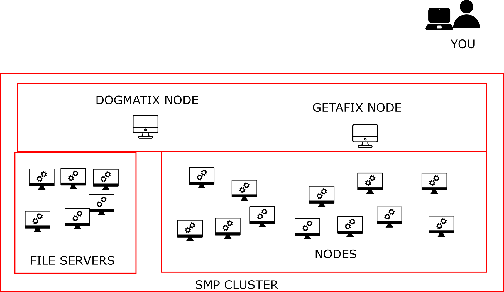

Introduction to the Mathematical Marine Ecology (MME) Lab
Mon 22 July 2019
Chapter 1 Welcome
Welcome to the Mathematical Marine Ecology Lab.
This book has been put together as the main source of information for all members of the MME Lab. It includes info on lab meetings, administration, data-storage, open data-science, R programming, writing skills and GitHub.
1.1 Lab Meetings
The MME lab meets up every fortnight in the on Level 5 of the Queenland Bioscience Precinct. We generally use this as an opportunity to catch up on what everyone is doing, and share tips and tricks around data, programming and open data-science. Each meeting, one person is nominated to lead a discussion on a specific topic. Contact Anthony to be added to the email list. You can also attend virtually.
1.2 General Administration
1.2.1 Lab Contact:
For any lab-specific issues, you should contact Anthony in the first instance: Professory Anthony Richardson: ajr@maths.uq.edu.au
1.2.2 SMP Contacts
1.2.3 General IT Support
All general UQ IT-related information can be found at: https://my.uq.edu.au/information-and-services/information-technology
1.2.4 High Performance Computing
Core Computational Facility @ UQ School of Mathematics and Physics http://research.smp.uq.edu.au/computing/
Howto - SMP getafix cluster http://research.smp.uq.edu.au/computing/getafix.html
Howto - SLURM Queuing Systems http://research.smp.uq.edu.au/computing/slurm.html
Howto - Run GPU Calculations http://research.smp.uq.edu.au/computing/gpu.html
1.3 Lab Communication
In progress……
1.3.1 Email
For formal communication that must be received and read.
1.3.2 GitHub Issues Tracking
For specific questions and issue tracking that relates to a project. Each issue can have its own converstaion chain. Tag people to notify them of something they need to deal with.
1.3.3 Gitter
For idle chit-chat, tips/tricks, cool papers etc. Things that are not critical for people to see in a short timeframe.
1.4 Open Data Science
While we have always made our data and code available to those who have asked, in 2019 the MME Lab has decided to adopt a full open data-science model. We attended the wonderful Data Science Training (http://ohi-science.org/data-science-training/) run by the The Ocean Health Index Team. We acknowledge all the help and resources they have made available which has allowed us to get up and running so quickly.
Many sections of this book introduce open data science so we can work with data in an open, reproducible, and collaborative way. Open data science means that methods, data, and code are available so that others can access, reuse, and build from it without much fuss. Here we demonstrate a workflow with R, RStudio, Git, and GitHub, as described in Lowndes et al. 2017, Nature Ecology & Evolution: Our path to better science in less time using open data science tools.
1.5 Online Code of Conduct
We have adopted the code of conduct from Mozilla to govern participation in all online communities associated with the MME Lab, including GitHub, Gitter, GoogleDocs, email and lab meetings. As part of this we must always: - Be respectful and value each other’s ideas, styles and viewpoints. - Be direct but professional; we cannot withhold hard truths. - Be inclusive and help new perspectives be heard. - Be open to learning from others. - Lead by example and match your actions with your words.
For a full description of the Community Participation Guidelines see: https://www.mozilla.org/en-US/about/governance/policies/participation/
1.5.1 Student Support
The University of Queensland Student Support Services can be found at: https://www.uq.edu.au/student-services/
This includes information and support services for student welfare, learning support, faith, health etc. All students are encouraged to familiarise themseleves with this page.
Chapter 2 R & RStudio, RMarkdown
2.1 Objectives & Resources
2.1.1 Objectives
In this lesson we will:
- get oriented to the RStudio interface
- work with R in the console
- be introduced to built-in R functions
- learn to use the help pages
- explore RMarkdown
2.1.2 Resources
This lesson is a combination of excellent lessons by others (thank you Jenny Bryan and Data Carpentry!) that I have combined and modified for our workshop today. I definitely recommend reading through the original lessons and using them as reference:
Dr. Jenny Bryan’s lectures from STAT545 at UBC
RStudio has great resources about its IDE (IDE stands for integrated development environment):
2.1.3 Data and packages
We will be using data and packages that are installed with R (often called “Base R”).
2.2 Why learn R with RStudio
You are all here today to learn how to code. Coding made me a better scientist because I was able to think more clearly about analyses, and become more efficient in doing so. Data scientists are creating tools that make coding more intuitive for new coders like us, and there is a wealth of awesome instruction and resources available to learn more and get help.
Here is an analogy to start us off. Think of yourself as a pilot, and R is your airplane. You can use R to go places! With practice you’ll gain skills and confidence; you can fly further distances and get through tricky situations. You will become an awesome pilot and can fly your plane anywhere.
And if R were an airplane, RStudio is the airport. RStudio provides support! Runways, communication, community, and other services that makes your life as a pilot much easier. So it’s not only the infrastructure (the user interface or IDE), although it is a great way to learn and interact with your variables, files, and interact directly with GitHub. It’s also a data science philosophy, R packages, community, and more. So although you can fly your plane without an airport and we could learn R without RStudio, that’s not what we’re going to do.
We are learning R together with RStudio and its many supporting features.
Something else to start us off is to mention that you are learning a new language here. It’s an ongoing process, it takes time, you’ll make mistakes, it can be frustrating, but it will be overwhelmingly awesome in the long run. We all speak at least one language; it’s a similar process, really. And no matter how fluent you are, you’ll always be learning, you’ll be trying things in new contexts, learning words that mean the same as others, etc, just like everybody else. And just like any form of communication, there will be miscommunications that can be frustrating, but hands down we are all better off because of it.
While language is a familiar concept, programming languages are in a different context from spoken languages, but you will get to know this context with time. For example: you have a concept that there is a first meal of the day, and there is a name for that: in English it’s “breakfast”. So if you’re learning Spanish, you could expect there is a word for this concept of a first meal. (And you’d be right: ‘desayuno’). We will get you to expect that programming languages also have words (called functions in R) for concepts as well. You’ll soon expect that there is a way to order values numerically. Or alphabetically. Or search for patterns in text. Or calculate the median. Or reorganize columns to rows. Or subset exactly what you want. We will get you increase your expectations and learn to ask and find what you’re looking for.
2.3 R at the console, RStudio goodies
Launch RStudio/R.

Notice the default panes:
- Console (entire left)
- Environment/History (tabbed in upper right)
- Files/Plots/Packages/Help (tabbed in lower right)
FYI: you can change the default location of the panes, among many other things: Customizing RStudio.
An important first question: where are we?
If you’ve have opened RStudio for the first time, you’ll be in your Home directory. This is noted by the ~/ at the top of the console. You can see too that the Files pane in the lower right shows what is in the Home directory where you are. You can navigate around within that Files pane and explore, but note that you won’t change where you are: even as you click through you’ll still be Home: ~/.

OK let’s go into the Console, where we interact with the live R process.
Make an assignment and then inspect the object you created by typing its name on its own.
x <- 3 * 4
x## [1] 12In my head I hear, e.g., “x gets 12”.
All R statements where you create objects – “assignments” – have this form: objectName <- value.
I’ll write it in the console with a hashtag #, which is the way R comments so it won’t be evaluated.
## objectName <- value
## This is also how you write notes in your code to explain what you are doing.Object names cannot start with a digit and cannot contain certain other characters such as a comma or a space. You will be wise to adopt a convention for demarcating words in names.
# i_use_snake_case
# other.people.use.periods
# evenOthersUseCamelCaseMake an assignment
this_is_a_really_long_name <- 2.5To inspect this variable, instead of typing it, we can press the up arrow key and call your command history, with the most recent commands first. Let’s do that, and then delete the assignment:
this_is_a_really_long_name## [1] 2.5Another way to inspect this variable is to begin typing this_…and RStudio will automagically have suggested completions for you that you can select by hitting the tab key, then press return.
One more:
science_rocks <- "yes it does!"You can see that we can assign an object to be a word, not a number. In R, this is called a “string”, and R knows it’s a word and not a number because it has quotes " ". You can work with strings in your data in R pretty easily, thanks to the stringr and tidytext packages. We won’t talk about strings very much specifically, but know that R can handle text, and it can work with text and numbers together (this is a huge benefit of using R).
Let’s try to inspect:
sciencerocks
# Error: object 'sciencerocks' not found2.3.1 Error messages are your friends
Implicit contract with the computer / scripting language: Computer will do tedious computation for you. In return, you will be completely precise in your instructions. Typos matter. Case matters. Pay attention to how you type.
Remember that this is a language, not unsimilar to English! There are times you aren’t understood – it’s going to happen. There are different ways this can happen. Sometimes you’ll get an error. This is like someone saying ‘What?’ or ‘Pardon’? Error messages can also be more useful, like when they say ‘I didn’t understand what you said, I was expecting you to say blah’. That is a great type of error message. Error messages are your friend. Google them (copy-and-paste!) to figure out what they mean.

And also know that there are errors that can creep in more subtly, when you are giving information that is understood, but not in the way you meant. Like if I am telling a story about suspenders that my British friend hears but silently interprets in a very different way (true story). This can leave me thinking I’ve gotten something across that the listener (or R) might silently interpreted very differently. And as I continue telling my story you get more and more confused… Clear communication is critical when you code: write clean, well documented code and check your work as you go to minimize these circumstances!
2.3.2 Logical operators and expressions
A moment about logical operators and expressions. We can ask questions about the objects we made.
==means ‘is equal to’!=means ‘is not equal to’<means ` is less than’>means ` is greater than’<=means ` is less than or equal to’>=means ` is greater than or equal to’
x == 2## [1] FALSEx <= 30## [1] TRUEx != 5## [1] TRUEShortcuts You will make lots of assignments and the operator
<-is a pain to type. Don’t be lazy and use=, although it would work, because it will just sow confusion later. Instead, utilize RStudio’s keyboard shortcut: Alt + - (the minus sign). Notice that RStudio automagically surrounds<-with spaces, which demonstrates a useful code formatting practice. Code is miserable to read on a good day. Give your eyes a break and use spaces. RStudio offers many handy keyboard shortcuts. Also, Alt+Shift+K brings up a keyboard shortcut reference card.
My most common shortcuts include command-Z (undo), and combinations of arrow keys in combination with shift/option/command (moving quickly up, down, sideways, with or without highlighting.
When assigning a value to an object, R does not print anything. You can force R to print the value by using parentheses or by typing the object name:
weight_kg <- 55 # doesn't print anything
(weight_kg <- 55) # but putting parenthesis around the call prints the value of `weight_kg`## [1] 55weight_kg # and so does typing the name of the object## [1] 55Now that R has weight_kg in memory, we can do arithmetic with it. For
instance, we may want to convert this weight into pounds (weight in pounds is 2.2 times the weight in kg):
weight_kg * 2.2## [1] 121We can also change a variable’s value by assigning it a new one:
weight_kg <- 57.5
weight_kg * 2.2## [1] 126.5And when we multiply it by 2.2, the outcome is based on the value currently assigned to the variable.
OK, let’s store the animal’s weight in pounds in a new variable, weight_lb:
weight_lb <- weight_kg * 2.2and then change weight_kg to 100.
weight_kg <- 100What do you think is the current content of the object weight_lb? 126.5 or 220? Why?
It’s 125.6. Why? Because assigning a value to one variable does not change the values of
other variables — if you want weight_kg updated to reflect the new value for weight_lb, you will have to re-execute that code. This is why we re-comment working in scripts and documents rather than the Console, and will introduce those concepts shortly and work there for the rest of the day.
We can create a vector of multiple values using c().
c(weight_lb, weight_kg)## [1] 126.5 100.0names <- c("Jamie", "Melanie", "Julie")
names## [1] "Jamie" "Melanie" "Julie"2.4 Your Turn
Exercise 1. Create a vector that contains the different weights of four fish (you pick the object name!):
- one fish: 12 kg
- two fish: 34 kg
- red fish: 20 kg
- blue fish: 6.6 kg
2. Convert the vector of kilos to pounds (hint: 1 kg = 2.2 pounds)
3. Calculate the total weight
fish_weights <- c(12, 34, 20, 6.6)
fish_weights_lb <- fish_weights * 2.2
sum(fish_weights_lb) #we haven't gone over functions like `sum()` yet but this is covered in the next section## [1] 159.722.5 R functions, help pages
R has a mind-blowing collection of built-in functions that are used with the same syntax: function name with parentheses around what the function needs to do what it is supposed to do. function_name(argument1 = value1, argument2 = value2, ...). When you see this syntax, we say we are “calling the function”.
Let’s try using seq() which makes regular sequences of numbers and, while we’re at it, demo more helpful features of RStudio.
Type se and hit TAB. A pop up shows you possible completions. Specify seq() by typing more to disambiguate or using the up/down arrows to select. Notice the floating tool-tip-type help that pops up, reminding you of a function’s arguments. If you want even more help, press F1 as directed to get the full documentation in the help tab of the lower right pane.
Type the arguments 1, 10 and hit return.
seq(1, 10)## [1] 1 2 3 4 5 6 7 8 9 10We could probably infer that the seq() function makes a sequence, but let’s learn for sure. Type (and you can autocomplete) and let’s explore the help page:
?seq
help(seq) # same as ?seqThe help page tells the name of the package in the top left, and broken down into sections:
- Description: An extended description of what the function does.
- Usage: The arguments of the function and their default values.
- Arguments: An explanation of the data each argument is expecting.
- Details: Any important details to be aware of.
- Value: The data the function returns.
- See Also: Any related functions you might find useful.
- Examples: Some examples for how to use the function.
seq(from = 1, to = 10) # same as seq(1, 10); R assumes by position## [1] 1 2 3 4 5 6 7 8 9 10seq(from = 1, to = 10, by = 2)## [1] 1 3 5 7 9The above also demonstrates something about how R resolves function arguments. You can always specify in name = value form. But if you do not, R attempts to resolve by position. So above, it is assumed that we want a sequence from = 1 that goes to = 10. Since we didn’t specify step size, the default value of by in the function definition is used, which ends up being 1 in this case. For functions I call often, I might use this resolve by position for the first
argument or maybe the first two. After that, I always use name = value.
The examples from the help pages can be copy-pasted into the console for you to understand what’s going on. Remember we were talking about expecting there to be a function for something you want to do? Let’s try it.
2.5.1 Your turn
Exercise: Talk to your neighbor(s) and look up the help file for a function that you know or expect to exist. Here are some ideas:
?getwd(),?plot(),min(),max(),?mean(),?log()).
And there’s also help for when you only sort of remember the function name: double-question mark:
??install Not all functions have (or require) arguments:
date()## [1] "Mon Jul 22 20:19:57 2019"2.6 Packages
So far we’ve been using a couple functions from base R, such as seq() and date(). But, one of the amazing things about R is that a vast user community is always creating new functions and packages that expand R’s capabilities. In R, the fundamental unit of shareable code is the package. A package bundles together code, data, documentation, and tests, and is easy to share with others. They increase the power of R by improving existing base R functionalities, or by adding new ones.
The traditional place to download packages is from CRAN, the Comprehensive R Archive Network, which is where you downloaded R. You can also install packages from GitHub, which we’ll do tomorrow.
You don’t need to go to CRAN’s website to install packages, this can be accomplished within R using the command install.packages("package-name-in-quotes"). Let’s install a small, fun package praise. You need to use quotes around the package name.:
install.packages("praise")Now we’ve installed the package, but we need to tell R that we are going to use the functions within the praise package. We do this by using the function library().
What’s the difference between a package and a library?
Sometimes there is a confusion between a package and a library, and you can find people calling “libraries” to packages.
Please don’t get confused: library() is the command used to load a package, and it refers to the place where the package is contained, usually a folder on your computer, while a package is the collection of functions bundled conveniently.
library(praise)Now that we’ve loaded the praise package, we can use the single function in the package, praise(), which returns a randomized praise to make you feel better.
praise()## [1] "You are cool!"2.7 Clearing the environment
Now look at the objects in your environment (workspace) – in the upper right pane. The workspace is where user-defined objects accumulate.

You can also get a listing of these objects with a few different R commands:
objects()## [1] "fish_weights" "fish_weights_lb"
## [3] "names" "science_rocks"
## [5] "this_is_a_really_long_name" "weight_kg"
## [7] "weight_lb" "x"ls()## [1] "fish_weights" "fish_weights_lb"
## [3] "names" "science_rocks"
## [5] "this_is_a_really_long_name" "weight_kg"
## [7] "weight_lb" "x"If you want to remove the object named weight_kg, you can do this:
rm(weight_kg)To remove everything:
rm(list = ls())or click the broom in RStudio’s Environment pane.
For reproducibility, it is critical that you delete your objects and restart your R session frequently. You don’t want your whole analysis to only work in whatever way you’ve been working right now — you need it to work next week, after you upgrade your operating system, etc. Restarting your R session will help you identify and account for anything you need for your analysis.
We will keep coming back to this theme but let’s restart our R session together: Go to the top menus: Session > Restart R.
2.7.1 Your turn
Exercise: Clear your workspace, then create a few new variables. Create a variable that is the mean of a sequence of 1-20. What’s a good name for your variable? Does it matter what your ‘by’ argument is? Why?
2.8 RMarkdown
Now we are going to also introduce RMarkdown. This is really key for collaborative research, so we’re going to get started with it early and then use it for the rest of the day.
This is also going to introduce us to the fact that RStudio is a sophisticated text editor (among all the other awesome things). You can use it to keep your files and scripts organized within one place (the RStudio IDE) while getting support that you expect from text editors (check-spelling and color, to name a few).
An RMarkdown file will allow us to weave markdown text with chunks of R code to be evaluated and output content like tables and plots.
File -> New File -> RMarkdown… -> Document of output format HTML, OK.

You can give it a Title like “My Project”. Then click OK.
OK, first off: by opening a file, we are seeing the 4th pane of the RStudio console, which is essentially a text editor. This lets us organize our files within RStudio instead of having a bunch of different windows open.
Let’s have a look at this file — it’s not blank; there is some initial text is already provided for you. Notice a few things about it:
- There are white and grey sections. R code is in grey sections, and other text is in white.

Let’s go ahead and “Knit HTML” by clicking the blue yarn at the top of the RMarkdown file.

What do you notice between the two? So much of learning to code is looking for patterns.
Notice how the grey R code chunks are surrounded by 3 backticks and {r LABEL}. These are evaluated and return the output text in the case of summary(cars) and the output plot in the case of plot(pressure).
Notice how the code plot(pressure) is not shown in the HTML output because of the R code chunk option echo=FALSE.
The hashtag (#) at lines 12 and 22 cause the following text to be displayed larger and in bold.
This RMarkdown file has 2 different languages within it: R and Markdown.
We don’t know that much R yet, but you can see that we are taking a summary of some data called ‘cars’, and then plotting. We will focus on R for the rest of the workshop, but for the rest of this morning let’s focus on the second language.
The second language is Markdown. This is a formatting language for plain text, and there are only about 15 rules to know.
Notice the syntax for:
- headers get rendered at multiple levels:
#,## - bold:
**word**
There are some good cheatsheets to get you started, and here is one built into RStudio: Go to Help > Markdown Quick Reference
Important: note that the hashtag # is used differently in Markdown and in R:
- in R, a hashtag indicates a comment that will not be evaluated. You can use as many as you want:
#is equivalent to######. It’s a matter of style. I use two##to indicate a comment so that it’s clearer what is a comment versus what I don’t want to run at the moment. - in Markdown, a hashtag indicates a level of a header. And the number you use matters:
#is a “level one header”, meaning the biggest font and the top of the hierarchy.###is a level three header, and will show up nested below the#and##headers.
If this seems confusing, take comfort in the fact that you are already used to using #s differently in real life: it can mean “number” or “pound” or hashtags on social media.
Learn more: http://rmarkdown.rstudio.com/
2.8.1 Your Turn
- In Markdown write some italic text, make a numbered list, and add a few subheaders. Use the Markdown Quick Reference (in the menu bar: Help > Markdown Quick Reference).
- Reknit your html file.
2.8.2 Code chunks
OK. Now let’s practice with some of those commands that we were working on this morning.
Create a new chunk in your RMarkdown first in one of these ways:
- click “Insert > R” at the top of the editor pane
- type by hand ```{r} ```
- if you haven’t deleted a chunk that came with the new file, edit that one
Now, let’s write some R code.
x <- seq(1:15)Now, hitting return does not execute this command; remember, it’s a text file in the text editor, it’s not associated with the R engine. To execute it, we need to get what we typed in the the R chunk (the grey R code) down into the console. How do we do it? There are several ways (let’s do each of them):
- copy-paste this line into the console.
- select the line (or simply put the cursor there), and click ‘Run’. This is available from
- the bar above the file (green arrow)
- the menu bar: Code > Run Selected Line(s)
- keyboard shortcut: command-return
- click the green arrow at the right of the code chunk
2.8.3 Your turn
Add a few more commands to your file from this morning. Execute them by trying the three ways above. Then, save your R Markdown file.
2.9 RMarkdown video (1-minute)
Let’s watch this to demonstrate all the amazing things you can now do:
2.10 Troubleshooting
Here are some additional things we didn’t have time to discuss:
2.10.1 I entered a command and nothing’s happening
It may be because you didn’t complete a command: is there a little + in your console? R is saying that it is waiting for you to finish. In the example below, I need to close that parenthesis.
> x <- seq(1, 10
+ 2.10.2 How do I update RStudio?
To see if you have the most current version of RStudio, go to the Help bar > Check for Updates. If there is an update available, you’ll have the option to Quit and Download, which will take you to http://www.rstudio.com/download. When you download and install, choose to replace the previous version.
Chapter 3 Programming in R
3.1 Objectives & Resources
Now we are going to build a little analysis. We will learn to automate our analyses with a for loop. We will make figures, and save them each with automated labeling. Then, we will join data from different files and conditionally label them with if/else statements.
3.1.1 Objectives
- create an R script
- for loops
- joining data
- if statements
3.2 Analysis plan
OK, here is the plan for our analysis. We want to plot the gdpPercap for each country in the gapminder data frame. So that’s 142 separate plots! We will automate this, labeling each one with its name and saving it in a folder called figures. We will learn a bunch of things as we go.
3.3 Create an R script
OK, now, we are going to create an R script. What is an R script? It’s a text file with a .R extension. We’ve been writing R code in R Markdown files so far; R scripts are just R code without the Markdown along with it.
Go to File > New File > R Script (or click the green plus in the top left corner).
Let’s start off with a few comments so that we know what it is for, and save it:
## gapminder-analysis.R
## analysis with gapminder data
## J Lowndes lowndes@nceas.ucsb.eduWe’ll be working with the gapminder data again so let’s read it in here:
## load libraries
library(tidyverse)
## read in gapminder data
gapminder <- readr::read_csv('https://raw.githubusercontent.com/OHI-Science/data-science-training/master/data/gapminder.csv')Remember, like in R Markdown, hitting return does not execute this command. To execute it, we need to get what we typed in the script down into the console. Here is how we can do that:
- copy-paste this line into the console.
- select the line (or simply put the cursor there), and click ‘Run’. This is available from
- the bar above the script (green arrow)
- the menu bar: Code > Run Selected Line(s)
- keyboard shortcut: command-return
- source the script, which means running the whole thing. This is also great for to see if there are any typos in your code that you’ve missed. You can do this by:
- clicking Source (blue arrow in the bar above the script).
- typing
source('gapminder-analysis.R')in the console (or from another R file!!!).
3.4 Automation with for loops
Our plan is to plot gdpPercap for each country. This means that we want to do the same operation (plotting gdpPercap) on a bunch of different things (countries). Yesterday we learned the dplyr’s group_by() function, and this is super powerful to automate through groups. But there are things that you may not want to do with group_by(), like plotting. So we will use a for loop.
Let’s start off with what this would look like for just one country. I’m going to demonstrate with Afghanistan:
## filter the country to plot
gap_to_plot <- gapminder %>%
filter(country == "Afghanistan")
## plot
my_plot <- ggplot(data = gap_to_plot, aes(x = year, y = gdpPercap)) +
geom_point() +
labs(title = "Afghanistan")Let’s actually give this a better title than just the country name. Let’s use the base::paste() function from to paste two strings together so that the title is more descriptive. Use ?paste to see what the “sep” variable does.
## filter the country to plot
gap_to_plot <- gapminder %>%
filter(country == "Afghanistan")
## plot
my_plot <- ggplot(data = gap_to_plot, aes(x = year, y = gdpPercap)) +
geom_point() +
## add title and save
labs(title = paste("Afghanistan", "GDP per capita", sep = " "))And as a last step, let’s save this figure.
## filter the country to plot
gap_to_plot <- gapminder %>%
filter(country == "Afghanistan")
## plot
my_plot <- ggplot(data = gap_to_plot, aes(x = year, y = gdpPercap)) +
geom_point() +
## add title and save
labs(title = paste("Afghanistan", "GDP per capita", sep = " "))
ggsave(filename = "Afghanistan_gdpPercap.png", plot = my_plot)OK. So we can check our repo in the file pane (bottom right of RStudio) and see the generated figure:

3.4.1 Thinking ahead: cleaning up our code
Now, in our code above, we’ve had to write out “Afghanistan” several times. This makes it not only typo-prone as we type it each time, but if we wanted to plot another country, we’d have to write that in 3 places too. It is not setting us up for an easy time in our future, and thinking ahead in programming is something to keep in mind.
Instead of having “Afghanistan” written 3 times, let’s instead create an object that we will assign to “Afghanistan”. We won’t name our object “country” because that’s a column header with gapminder, and will just confuse us. Let’s make it distinctive: let’s write cntry (country without vowels):
## create country variable
cntry <- "Afghanistan"Now, we can replace each "Afghanistan" with our variable cntry. We will have to introduce a paste statement here too, and we want to separate by nothing (""). Note: there are many ways to create the filename, and we are doing it this way for a specific reason right now.
## create country variable
cntry <- "Afghanistan"
## filter the country to plot
gap_to_plot <- gapminder %>%
filter(country == cntry)
## plot
my_plot <- ggplot(data = gap_to_plot, aes(x = year, y = gdpPercap)) +
geom_point() +
## add title and save
labs(title = paste(cntry, "GDP per capita", sep = " "))
## note: there are many ways to create filenames with paste() or file.path(); we are doing this way for a reason.
ggsave(filename = paste(cntry, "_gdpPercap.png", sep = ""), plot = my_plot)Let’s run this. Great! it saved our figure (I can tell this because the timestamp in the Files pane has updated!)
3.4.2 For loop basic structure
Now, how about if we want to plot not only Afghanistan, but other countries as well? There wasn’t actually that much code needed to get us here, but we definitely do not want to copy this for every country. Even if we copy-pasted and switched out the country assigned to the cntry variable, it would be very typo-prone. Plus, what if you wanted to instead plot lifeExp? You’d have to remember to change it each time…it gets messy quick.
Better with a for loop. This will let us cycle through and do what we want to each thing in turn. If you want to iterate over a set of values, and perform the same operation on each, a for loop will do the job.
Sit back and watch me for a few minutes while we develop the for loop. Then we’ll give you time to do this on your computers as well.
The basic structure of a for loop is:
for( each item in set of items ){
do a thing
}Note the ( ) and the { }. We talk about iterating through each item in the for loop, which makes each item an iterator.
So looking back at our Afghanistan code: all of this is pretty much the “do a thing” part. And we can see that there are only a few places that are specific to Afghanistan. If we could make those places not specific to Afghanistan, we would be set.

Let’s paste from what we had before, and modify it. I’m also going to use RStudio’s indentation help to indent the lines within the for loop by highlighting the code in this chunk and going to Code > Reindent Lines (shortcut: command I)
## create country variable
cntry <- "Afghanistan"
for (each cntry in a list of countries ) {
## filter the country to plot
gap_to_plot <- gapminder %>%
filter(country == cntry)
## plot
my_plot <- ggplot(data = gap_to_plot, aes(x = year, y = gdpPercap)) +
geom_point() +
## add title and save
labs(title = paste(cntry, "GDP per capita", sep = " "))
ggsave(filename = paste(cntry, "_gdpPercap.png", sep = ""), plot = my_plot)
}3.4.3 Executable for loop!
OK. So let’s start with the beginning of the for loop. We want a list of countries that we will iterate through. We can do that by adding this code before the for loop.
## create a list of countries
country_list <- c("Albania", "Fiji", "Spain")
for ( cntry in country_list ) {
## filter the country to plot
gap_to_plot <- gapminder %>%
filter(country == cntry)
## plot
my_plot <- ggplot(data = gap_to_plot, aes(x = year, y = gdpPercap)) +
geom_point() +
## add title and save
labs(title = paste(cntry, "GDP per capita", sep = " "))
ggsave(filename = paste(cntry, "_gdpPercap.png", sep = ""), plot = my_plot)
}At this point, we do have a functioning for loop. For each item in the country_list, the for loop will iterate over the code within the { }, changing cntry each time as it goes through the list. And we can see it works because we can see them appear in the files pane at the bottom right of RStudio!
Great! And it doesn’t matter if we just use these three countries or all the countries–let’s try it.
But first let’s create a figure directory and make sure it saves there since it’s going to get out of hand quickly. We could do this from the Finder/Windows Explorer, or from the “Files” pane in RStudio by clicking “New Folder” (green plus button). But we are going to do it in R. A folder is called a directory:
dir.create("figures")
## create a list of countries
country_list <- unique(gapminder$country) # ?unique() returns the unique values
for( cntry in country_list ){
## filter the country to plot
gap_to_plot <- gapminder %>%
filter(country == cntry)
## plot
my_plot <- ggplot(data = gap_to_plot, aes(x = year, y = gdpPercap)) +
geom_point() +
## add title and save
labs(title = paste(cntry, "GDP per capita", sep = " "))
## add the figures/ folder
ggsave(filename = paste("figures/", cntry, "_gdpPercap.png", sep = "")), plot = my_plot)
} So that took a little longer than just the 3, but still super fast. For loops are sometimes just the thing you need to iterate over many things in your analyses.
3.4.4 Clean up our repo
OK we now have 142 figures that we just created. They exist locally on our computer, and we have the code to recreate them anytime. But, we don’t really need to push them to GitHub. Let’s delete the figures/ folder and see it disappear from the Git tab.
3.4.5 Your turn
- Modify our for loop so that it:
- loops through countries in Europe only
- plots the cumulative mean gdpPercap (Hint: Use the Data Wrangling Cheatsheet!)
- saves them to a new subfolder inside the (recreated) figures folder called “Europe”.
- Sync to GitHub
3.4.5.1 Answer
No peeking!
dir.create("figures")
dir.create("figures/Europe")
## create a list of countries. Calculations go here, not in the for loop
gap_europe <- gapminder %>%
filter(continent == "Europe") %>%
mutate(gdpPercap_cummean = dplyr::cummean(gdpPercap))
country_list <- unique(gap_europe$country) # ?unique() returns the unique values
for( cntry in country_list ){ # (cntry = country_list[1])
## filter the country to plot
gap_to_plot <- gap_europe %>%
filter(country == cntry)
## add a print message to see what's plotting
print(paste("Plotting", cntry))
## plot
my_plot <- ggplot(data = gap_to_plot, aes(x = year, y = gdpPercap_cummean)) +
geom_point() +
## add title and save
labs(title = paste(cntry, "GDP per capita", sep = " "))
ggsave(filename = paste("figures/Europe/", cntry, "_gdpPercap_cummean.png", sep = "")),
plot = my_plot)
} Notice how we put the calculation for cummean() outside the for loop. It could have gone inside, but it’s an operation that could be done just one time before hand (outside the loop) rather than multiple times as you go (inside the for loop).
3.5 Conditional statements with if and else
Often when we’re coding we want to control the flow of our actions. This can be done by setting actions to occur only if a condition or a set of conditions are met.
In R and other languages, these are called “if statements”.
3.5.1 if statement basic structure
# if
if (condition is true) {
do something
}
# if ... else
if (condition is true) {
do something
} else { # that is, if the condition is false,
do something different
}Let’s bring this concept into our for loop for Europe that we’ve just done. What if we want to add the label “Estimated” to countries that were estimated? Here’s what we’d do.
First, import csv file with information on whether data was estimated or reported, and join to gapminder dataset:
est <- readr::read_csv('https://raw.githubusercontent.com/OHI-Science/data-science-training/master/data/countries_estimated.csv')## Parsed with column specification:
## cols(
## country = col_character(),
## estimated = col_character()
## )gapminder_est <- left_join(gapminder, est)## Joining, by = "country"dir.create("figures")
dir.create("figures/Europe")
## create a list of countries
gap_europe <- gapminder_est %>% ## use instead of gapminder
filter(continent == "Europe") %>%
mutate(gdpPercap_cummean = dplyr::cummean(gdpPercap))
country_list <- unique(gap_europe$country)
for( cntry in country_list ){ # (cntry = country_list[1])
## filter the country to plot
gap_to_plot <- gap_europe %>%
filter(country == cntry)
## add a print message
print(paste("Plotting", cntry))
## plot
my_plot <- ggplot(data = gap_to_plot, aes(x = year, y = gdpPercap_cummean)) +
geom_point() +
## add title and save
labs(title = paste(cntry, "GDP per capita", sep = " "))
## if estimated, add that as a subtitle.
if (gap_to_plot$estimated == "yes") {
## add a print statement just to check
print(paste(cntry, "data are estimated"))
my_plot <- my_plot +
labs(sutbtitle("Estimated data"))
}
# Warning message:
# In if (gap_to_plot$estimated == "yes") { :
# the condition has length > 1 and only the first element will be used
ggsave(filename = paste("figures/Europe/", cntry, "_gdpPercap_cummean.png", sep = ""),
plot = my_plot)
} This worked, but we got a warning message with the if statement. This is because if we look at gap_to_plot$estimated, it is many “yes”s or “no”s, and the if statement works just on the first one. We know that if any are yes, all are yes, but you can imagine that this could lead to problems down the line if you didn’t know that. So let’s be explicit:
3.5.2 Executable if statement
dir.create("figures")
dir.create("figures/Europe")
## create a list of countries
gap_europe <- gapminder_est %>% ## use instead of gapminder
filter(continent == "Europe") %>%
mutate(gdpPercap_cummean = dplyr::cummean(gdpPercap))
country_list <- unique(gap_europe$country)
for( cntry in country_list ){ # (cntry = country_list[1])
## filter the country to plot
gap_to_plot <- gap_europe %>%
filter(country == cntry)
## add a print message
print(paste("Plotting", cntry))
## plot
my_plot <- ggplot(data = gap_to_plot, aes(x = year, y = gdpPercap_cummean)) +
geom_point() +
## add title and save
labs(title = paste(cntry, "GDP per capita", sep = " "))
## if estimated, add that as a subtitle.
if (any(gap_to_plot$estimated == "yes")) { # any() will return a single TRUE or FALSE
print(paste(cntry, "data are estimated"))
my_plot <- my_plot +
labs(subtitle = "Estimated data")
}
ggsave(filename = paste("figures/Europe/", cntry, "_gdpPercap_cummean.png", sep = ""),
plot = my_plot)
} OK so this is working as we expect! Note that we do not need an else statement above, because we only want to do something (add a subtitle) if one condition is met. But what if we want to add a different subtitle based on another condition, say where the data are reported, to be extra explicit about it?
3.5.3 Executable if/else statement
dir.create("figures")
dir.create("figures/Europe")
## create a list of countries
gap_europe <- gapminder_est %>% ## use instead of gapminder
filter(continent == "Europe") %>%
mutate(gdpPercap_cummean = dplyr::cummean(gdpPercap))
country_list <- unique(gap_europe$country)
for( cntry in country_list ){ # (cntry = country_list[1])
## filter the country to plot
gap_to_plot <- gap_europe %>%
filter(country == cntry)
## add a print message
print(paste("Plotting", cntry))
## plot
my_plot <- ggplot(data = gap_to_plot, aes(x = year, y = gdpPercap_cummean)) +
geom_point() +
## add title and save
labs(title = paste(cntry, "GDP per capita", sep = " "))
## if estimated, add that as a subtitle.
if (any(gap_to_plot$estimated == "yes")) { # any() will return a single TRUE or FALSE
print(paste(cntry, "data are estimated"))
my_plot <- my_plot +
labs(subtitle = "Estimated data")
} else {
my_plot <- my_plot +
labs(subtitle = "Reported data")
print(paste(cntry, "data are reported"))
}
ggsave(filename = paste("figures/Europe/", cntry, "_gdpPercap_cummean.png", sep = ""),
plot = my_plot)
} Note that this works because we know there are only two conditions, Estimated == yes and Estimated == no. In the first if statement we asked for estimated data, and the else condition gives us everything else (which we know is reported). We can be explicit about setting these conditions in the else clause by instead using an else if statement. Below is how you would construct this in your for loop, similar to above:
if (any(gap_to_plot$estimated == "yes")) { # any() will return a single TRUE or FALSE
print(paste(cntry, "data are estimated"))
my_plot <- my_plot +
labs(subtitle = "Estimated data")
} else if (any(gap_to_plot$estimated == "no")){
my_plot <- my_plot +
labs(subtitle = "Reported data")
print(paste(cntry, "data are reported"))
}## Warning: Unknown or uninitialised column: 'estimated'.
## Warning: Unknown or uninitialised column: 'estimated'.This construction is necessary if you have more than two conditions to test for.
3.6 More R!
With just a little bit of time left, here are some things that you can look into more on your own.
3.6.1 Importing and Installing
Here are some really helpful packages for you to work with:
Remember you’ll use install.packages("package-name-in-quotes") to install from CRAN.
readrto read in .csv filesreadxlto read in Excel filesstringrto work with stringslubridateto work with dates
You are also able to install packages directly with Github, using the devtools package. Then, instead of install.packages(), you’ll use devtools::install_github(). And you can create your own packages when you’re ready. Read http://r-pkgs.had.co.nz/ to learn how!
3.6.2 Organization and workflows
- set up a folder for figs, intermediate analyses, final outputs, figures
3.6.3 Getting help
You’ll soon have questions that are outside the scope of this workshop, how do you find answers?
- end with a ton of resources: https://peerj.com/collections/50-practicaldatascistats/
3.7 Ideas for Extended Analysis 2
- stringr() http://r4ds.had.co.nz/strings.html
Chapter 4 GitHub
I would like to edit and update this. It is a direct close from the OHI Training Workbook. ## Objectives
After today you will be able to start incorporating GitHub into your workflow.
This will change you life (for the better!)
Github was developed for social coding (i.e., sort of like an open source Wikipedia for programmers). Consequently, much of the functionality and terminology of Github (e.g., branches and pull requests) will not be relevant for most scientists.
We will skip over all this stuff!
To get the full functionality of Github, you will eventually want to learn other concepts.
But, this can wait.
Basically, we have figured out exactly what you need to know to get started!
4.1 What are Git and Github?
Git and GitHub are two distinct programs, but I think of them as a bundle because I always use them together.
Git is a version control system that lets you track changes to files over time.
Github is a website for storing your git versioned files remotely. It has many nice features to be able visualize differences between images, rendering & diffing map data files, render text data files, and track changes in text.
4.2 Why should scientists use GitHub?
- Ends (or, nearly ends) the horror of keeping track of versions.
Basically, we get away from this:

When you open your repository, you only see the most recent version. But, it easy to compare versions, and you can easily revert to previous versions.
- Provides peace of mind because you make changes to your work…and know that you can easily access earlier versions.
- Improves collaborative efforts. Different researchers can work on the same files at the same time!
- It is easy to share and distribute files through the Github website.
- Your files are available anywhere, you just need internet connection!
We’ll interface with GitHub from our local computers using RStudio because it works well with the R/RStudio workflow. But, there are many other ways to interact with GitHub, including GitHub’s Desktop App or the command line (here is Jenny Bryan’s list of git clients).
At some point you will need to use the command line to interface with Git, but this isn’t necessary for starting. There are great resources for learning the command line, check out this tutorial from SWC at UCSB.
4.3 Resources
These are materials we borrow from:
- Jenny Bryan’s lectures from STAT545 at UBC: The Shell
- Jenny Bryan’s Happy git with R tutorial
- Melanie Frazier’s GitHub Quickstart
- Ben Best’s Software Carpentry at UCSB
4.4 Let’s get started
4.4.1 Some Github terminology
- User: A Github account for you (e.g., jules32).
- Organization: The Github account for one or more user (e.g., datacarpentry).
- Repository: A folder within the organization that includes files dedicated to a project.
- Local Github: Copies of Github files located your computer.
- Remote Github: Github files located on the https://github.com website.
- Clone: Process of making a local copy of a remote Github repository. This only needs to be done once (unless you mess up your local copy).
- Pull: Copy changes on the remote Github repository to your local Github repository. This is useful if multiple people are making changes to a repository.
- Push: Save local changes to remote Github

After we set up git on your computers, we’ll explore the full GitHub process:
- create a repository on GitHub.com
- clone locally using RStudio
- learn the RStudio-GitHub workflow by syncing to Github.com: pull, stage, commit, push
- explore github.com: files, commit history, file history
- practice the RStudio-GitHub workflow by editing and adding files
- practice R Markdown
4.4.2 Setup Git & GitHub
The GitHub setup is a one-time thing! You will only have to do this once per computer. We’ll walk through this together.
NOTE: If you are a student you can get the micro account which includes 5 private repositories for free (normally a $7/month value). You can sign up for the student account here. Instructors can also request a free organization account, “Request a discount”.
Download and install Git (https://git-scm.com/downloads)
Create a Github account at http://github.com, if you don’t already have one. For a username, I recommend all lower-case letters, short as you can. I recommend using your .edu email, since you can request free private repositories via GitHub Education discount.
You will use the
usethispackage to configure git with global commands, which means it will apply ‘globally’ to all files on your computer, rather than to a specific folder.
install.packages("usethis")
library(usethis)
use_git_config(user.name = "Melsteroni", user.email = "Melsteroni@example.org")BACKUP PLAN If usethis fails, the following is the classic approach to configuring git. Open the Git Bash program (Windows) or the Terminal (Mac) and type the following:
# display your version of git
git --version
# replace USER with your Github user account
git config --global user.name USER
# replace NAME@EMAIL.EDU with the email you used to register with Github
git config --global user.email NAME@EMAIL.EDU
# list your config to confirm user.* variables set
git config --list- Make sure Git and RStudio are tallking: Click on “Project (None)” on the top right –> “New Project” –> “Version Control” –> Git

Do any ominous messages pop up?
4.4.2.1 Troubleshooting
If you have problems setting up git, please see the Troubleshooting section in Jenny Bryan’s amazing HappyGitWithR.
New(ish) Error on a Mac We’ve also seen the following errors from RStudio:
error key does not contain a section --global terminaland
fatal: not in a git directoryTo solve this, go to the Terminal and type:
which git

Look at the filepath that is returned. Does it say anything to do with Apple?
-> If yes, then the Git you downloaded isn’t installed, please redownload if necessary, and follow instructions to install.
-> If no, (in the example image, the filepath does not say anything with Apple) then proceed below:
In RStudio, navigate to: Tools > Global Options > Git/SVN.

Does the “Git executable” filepath match what the url in Terminal says?

If not, click the browse button and navigate there.
Note: on my laptop, even though I navigated to /usr/local/bin/git, it then automatically redirect because /usr/local/bin/git was an alias on my computer. That is fine. Click OK.
Quit RStudio.
Then relaunch RStudio.
Try syncing or cloning, and if that works and then you don’t need to worry about typing into the Terminal, you’re all done!
4.4.3 Create a repository on Github.com
First, go to your account on github.com and click “New repository”.

Choose a name. Call it whatever you want (the shorter the better), or follow me for convenience. I will call mine quickstart.
Also, add a description, make it public, create a README file, and create your repo!

The Add gitignore option adds a document where you can identify files or file-types you want Github to ignore. These files will stay in on the local Github folder (the one on your computer), but will not be uploaded onto the web version of Github.
The Add a license option adds a license that describes how other people can use your Github files (e.g., open source, but no one can profit from them, etc.). We won’t worry about this today.
Check out our new repository!
Notice how the README.md file we created is automatically displayed at the bottom. The .md means that it is Markdown (remember how .Rmd was RMarkdown?) so the formatting we learned in the last lesson apply here.

From here, you will work locally (on your computer).
4.4.4 Clone your repository using RStudio
We are going to be cloning a copy of our remote repository on Github.com to our local computers. Unlike downloading, cloning keeps all the version control and user information bundled with the files.
Step 0: Create your github folder
This is really important! We need to be organized and deliberate about where we want to keep all of our GitHub repositories (since this is the first of many in your career).
Let’s all make a folder called github (all lowercase!) in our home directories. So it will look like this:
- Windows:
Users\[User]\Documents\github\ - Mac:
Users/[User]/github/
This will let us take advantage of something that is really key about GitHub.com: cloned repositories are saved as folders that you can navigate on your computer. The greatness of this will be evident soon.
So really. Make sure that you have an all-lowercase folder called github in your home directory!!
Step 1: Copy the web address of the repository you want to clone.

Step 2: from RStudio, go to New Project (also in the File menu).

Step 3: Select Version Control

Step 4: Select Git

Step 5: Paste it in the Repository URL field, and type tab to autofill the Project Directory name. Make sure you keep the Project Directory Name THE SAME as the repository name from the URL.
Save it in your github folder (click on Browse) to do this.

4.4.5 Inspect results
If everything went well, the repository will be added to the list located here:

when we cloned this from RStudio, it created an RStudio project, which you can tell because:
- our working directory is set to `~/github/Quickstart`
- there's an `.RProj` file in the "Files" tab
- the project is named in the top right hand corner
- we have a git tab! This is how we will interface with Github.comWhen you first clone a repo through RStudio, RStudio will add an .Rproj file to your repo folder. If you didn’t add a .gitignore file when you originally created the repo on GitHub.com, RStudio will also add this for you. These will show up with little yellow ? icons in your git tab. This is GitHub’s way of saying: “ooohh…..something changed in the repository”. In this case, when you click the box to stage them, they will turn into As because they have been added to the repo.
And the repository will be saved to the Github folder on your computer:

Ta da!!!! The folder doesn’t contain much of interest, but we are going to change that.
4.4.6 Add files to our local repo
The repository will contain:
- .gitignore file
- README.md
- Rproj
And, I typically create the following:
- folders for “data” and “figures”
- R scripts
- etc.
We can use the Git tab of RStudio to monitor changes to files in the local repository. When files change, RStudio uses the following codes to describe how the files have been modified:

We will demonstrate this by copying a file into the repository folder on my computer. This file will be added to the Git tab beside a green box with an “A”!
From this, you can see how the repository is being tracked, even when changes aren’t made through RStudio.
We can also make changes through RStudio!
4.4.7 Committing your changes and syncing with GitHub.com
Eventually you will want to commit the files you have created in your local repository and then send them to GitHub.com
I tend to do this every time I finish a task (basically when I start getting nervous that I will lose my work). Once something is committed, it is very difficult to lose it.
Committing saves the current saved version of your files to the official Git History. The commit includes all the staged files as well as a corresponding commit message (which you will write) and a unique identifier called a SHA ID. When you are ready to commit your changes, follow these steps:

We walk through this process below:
4.4.7.1 Pull
From the Git tab, “Pull” the repository. This makes sure your local repository is synced with the remote repository. This is very important if other people are making changes to the repository or if you are working from multiple computers.

4.4.7.2 Stage
Stage the files you want to commit. In RStudio, this involves checking the “Staged” boxes:

4.4.7.3 Commit
Add a commit message that describes the updates you made to these files. The message will be for your reference, so make it something you will find useful.

4.4.7.4 Push
You will “Push” to save your local changes to Github.com.

4.5 Explore remote Github
The files you added should be on github.com:

Your turn!
This time let’s edit an existing file instead of adding something new. Open your README file by clicking on it in the Files pane (lower right corner). Write a few lines of text, save, and see what happens in your Git Tab. Sync it to your remote repository (Github.com).
Also, go to your Finder/Windows Explorer, and copy-paste something into your local GitHub repo. Then go back to RStudio and confirm that git tracked it. Remember, git will track anything within that folder (the way Dropbox does), it’s not specific to RStudio!
4.6 Going back in time
One thing that I love about about Github is that it is easy to see how files have changed over time. Usually I compare commits through github.com:


You can click on the commits to see how the files changed from the previous commit:

4.7 Happy Git with R
If you have problems, we’ll help you out using Jenny Bryan’s HappyGitWithR, particularly the sections on Detect Git from RStudio and RStudio, Git, GitHub Hell (troubleshooting). So as we are coming around, have a look at it and see if you can help troubleshoot too!
Chapter 5 How to write well
5.1 Introduction
Writing can be difficult!
“There is nothing to writing. All you do is sit down at a typewriter and bleed.” Ernest Hemingway
Writing can be a lot of work!
“If I had more time I would have written a shorter letter” Blaize Pascal, 1657
Writing can invoke strong feelings!
“Here is a lesson in creative writing. The first rule: do not use semicolons. They are transvestite hermaphrodites representing absolutely nothing. All they do is show you’ve been to college” Kurt Vonnegut, The Man Without a Country
Writing can be fun!
“To write is human, to edit is divine.” Stephen King
5.1.1 What is good scientific writing?
Maybe a truthful but uninformative answer is “You know when you read it!”. Being able to understand the message easily is clearly essential. But so is being concise, as words cost journals money and scientists have limited time to read your work. But good scientific writing is more than just being clear and concise. For example, newspaper articles can be clear and concise, but most would say that the journalistic style is inappropriate in a scientific setting. Scientific writing has a host of conventions, not all of which are always made explicit. For example, adhering to the typical structure of a scientific paper, not using colloquialisms, not providing opinion, and not being emotive, to name a few. Although it might feel that such “rules” take the fun out of writing, good scientific writing should not be bland and boring to read. There is room, and indeed a need, for creativity.
5.1.2 Why write well?
There are many reasons why as scientists we need to write well. First, science is about ideas, and we need to communicate those ideas clearly, effectively and interestingly. An engaged reader will remember what s/he has read. If you fail to communicate effectively, your work will ultimately be of little use to the wider scientific community, resulting in lower uptake and fewer citations.
Second, publishing is the currency of science and requires convincing Editors and Reviewers that your work is robust and meaningful. If your work is not well written, you cannot expect others to understand it. Reviewers can become bogged down in poor writing and sometimes assume that it is indicative of poor science. Reviewers sometimes return poorly written manuscripts directly to the Editor and refuse to review it. At best poor scientific writing leads to delays in the publication process, and at worst outright rejection.
Third, writing clearly will improve your science. If your supervisors, co-authors, and collaborators understand your message and see that you have worked hard to provide a clearly written piece of work, they will provide far better input. If collaborators have to rewrite your work to understand it before they can comment on the content, you will frustrate them immensely and you will receive fewer quality comments about scientific direction and whether your paper hits the mark. In fact, writing well is valued by many collaborators and will lead to more collaborations.
Last, writing well is a fundamental scientific skill (along with, for example, knowledge of the scientific method, quantitative skills, and discipline-specific technical skills), and we have a responsibility to write as well as we can out of respect for others, and to pass this knowledge on. With escalating pressures on academics, fewer of them are taking the time to help students with their writing skills. In the worst cases, supervisors and collaborators to pass on the task of language editing to the peer-review process. This is hugely counterproductive, and simply reinforces the cycle of deterioration in writing skills. Students and the academics who supervise them need to take responsibility in being part of the solution – improving scientific writing by passing on their knowledge to others.
5.1.3 Why do we have difficulties writing well?
We all have to learn scientific writing – scientific English is no one’s first language! And it is even more difficult if English is not your mother tongue, especially for people who speak languages from outside Europe. So scientific writing does not come easily and requires hard work.
Throughout our studies, we are not taught the concepts that are necessary for good writing. In many countries, the teaching of grammar at school is out of vogue. Scientific writing is also often not taught at university at the undergraduate levels. Nowadays, writing well is not a major learning outcome of most science courses, and assignments are marked predominantly on content and not readability and style. It is also easier to learn scientific writing during your postgraduate study when you can draw on your research, but many countries do not have coursework during postgraduate studies. Unfortunately, during this key developmental period, many supervisors often feel too busy to spend time to improve the writing of their students.
Writing well also takes considerable time and effort. Writing well requires hard work rewriting many drafts, being self-critical of your own work, being afraid to make sometimes substantial changes, and opening up yourself to critique and potential criticism from others. For all these reasons, many scientists have trouble writing well. But scientific writing can be learned.
5.1.4 How this e-book can help
This e-book, How to write well, provides what we think is best practice in terms of scientific writing and simple approaches to avoid common pitfalls. Often errors in writing are corrected or stylistic suggestions made by supervisors,
reviewers or peers, without an explanation, primarily because of the people are time poor. This book is a result of seeing common mistakes by our students, and wanting to teach them how they can improve their writing. During our careers we have developed inherent knowledge about good scientific writing, and this e- book is an attempt to write this down into a coherent whole that is useful to others.
Our approach is to identify a common problem, explain why it is a problem, illustrate it with examples, and show solutions. The content here is based on our experience, is by no means exhaustive, and others might have a different opinion. We are not English teachers or grammar Nazis (although Dave might be…?). We are merely practicing scientists interested in improving our own and others’ writing by sharing our experiences.
Finally, this is part of a series of e-books that can help guide you through your scientific career. Often the best way to learn much of this information is to seek out a mentor. But it can be difficult to find a mentor with the insight, all-round skills, and the time available to provide advice. We have written this series of e- books to provide you with such a mentor – hopefully to provide the knowledge and guidance that you need in your career.
This is the first e-book in the series. The second e-book is Writing a scientific paper. Early on in our careers we are ill-prepared for this challenge. Experienced scientists generally acquire the skills slowly and haphazardly through osmosis or from trial-and-error. Writing a paper thus often seems like a “dark art” – one that some scientists have mastered, but one that is hidden and rarely shared. The e- book Writing a scientific paper shines a light on the process of writing a scientific paper and helps you master it.
The third e-book is Navigating the peer-review process. This often-overlooked part of the publication process involves understanding what different journals expect, what Editors and Reviewers look for, and how the peer-review process works. The e-book Navigating the peer-review process formalises our knowledge, experiences and opinions over the past 25 years of how we have gotten our work published. This e-book should will boost your chances of getting your work published, make it easier to get it published, reduce the time it takes to get it published, and help you formalise your own best practice.
You can read these e-books in any order, and you can read their chapters in any order, dipping into the chapters most relevant to you. These books are targeted at early- and mid-career researchers, but will also provide insights for more experienced scientists. We would appreciate your feedback about what you found useful (or not) in the e-books, and what you would like to see covered in the future.
Anthony J. Richardson and David S. Schoeman
5.2 General scientific style
5.2.1 Remove emotive language
You should try and state the facts without using emotive terms include alarming, concerning, drastic, lovely, useless, wonderful and worringly. Especially in research focusing on conservation of habitats or iconic species, it is easy to use emotive language. If in doubt, think of the animal as a cockroach and see whether you would use the same language!
Rather than: Following those alarming catch reductions, bans for manta ray fisheries were applied to some areas.
Try: Following declining catches, bans for manta ray fisheries were applied to some areas.
Or, stronger: Following precipitous declines in catches, bans for manta ray fisheries were applied to some areas.
5.2.2 Be consistent
Reviewers and examiners often regard sloppiness and lack of attention in scientific writing as an indication of carelessness in your science. Some common examples include: - Use capitals for proper nouns everywhere - Whether you choose to use –ize or –ise, be consistent - Whether you choose to use a space (preferably) or not between numbers and their units, be consistent
5.2.3 Be particular!
There are a bunch of things that are wrong and are just sloppy. Below are some examples, none of which is that important, but show a lack of care that can make the reader question how careful your science is.
Rather than: La Nina/El Nino
It is: La Niña/El Niño
Rather than: Homo spp.
It is: Homo spp. (Only the genus names is italicised).
**** Rather than: m2
It is: m2
Rather than: www.lternet.edu
It is: www.lternet.edu (Enables the Reader to use the hyperlink in a pdf).
5.2.4 Repetition is good!
Scientific writing is different from writing novels. For example, in a novel an author might use different terms to identify the same thing to make it more interesting. However, in a scientific paper, repetition of the same term in makes it easier for the Reader to follow.
5.2.5 Elegant variation confuses…
When there are multiple ways to say the same thing, one should not cycle through the different options for “elegant variation” because the use of a different word to a Reader can suggest something different is happening. For example, if a scientist is working on ‘copepods’, it is best to use this consistently throughout the paper, rather than referring to them variedly as ‘small crustaceans’, ‘zooplankton’, ‘maxillopodes’, ‘arthropods’, and ‘insects of the sea’, as the Reader will wonder if the author means different things by the different terms.
In the following example, the Author has switched from using ‘measurement types’ and ‘ecological traits’ to ‘measurement attributes’ and ‘ecological characters’, making the Reader wonder if it is the same quantities being described.
Rather than: Predictors were divided into two categories: measurement types and ecological traits. For measurement attributes we considered the frequency of sampling. For ecological characters we used a global database.
Try: Predictors were divided into two categories: measurement types and ecological traits. For measurement types we considered the frequency of sampling. For ecological traits we used a global database.
The following example uses ‘influenced’ and ‘described’ in similar contexts, leaving the Reader wondering whether the author meant to highlight such a difference.
Rather than: While the abundance of pelagic fish is influenced by food availability and reproduction, their movement is described by oceanographic variables.
Try: While the abundance of pelagic fish is influenced by food availability and reproduction, their movement is influenced by oceanographic variables.
5.2.6 Making word structure parallel…
Repetition of structure in sentences and paragraphs, and even in headings, can make things easier to follow because it meets the expectations of a Reader. In the following example, the US is at the end of its part of the sentence and the UK is at the start.
Rather than: …targeting the National Science Foundation in the US and the UK Natural Environment Research Council.
Try: …targeting the US National Science Foundation and the UK Natural Environment Research Council.
The specification of these three regions is not consistence amongst the parts of the sentence.
Rather than: The northern region (10-25˚S) is characterised by warm tropical surface waters and a shallow mixed layer, subtropical waters form the central region (25-45˚S), and the most southern region (45-60˚S) verges on cooler subantarctic waters.
Try: The northern region (10-24˚S) has warm tropical surface waters and a shallow mixed layer, the central region (24-45˚S) has subtropical and well mixed waters, and the southern region (45-50˚S) has cool subantarctic waters.
5.2.7 Be specific
Rather than: Aggregations of reef manta rays Manta alfredi, such as those in the Maldives, Western Australia, and Komodo National Park in Indonesia are correlated with productivity.
Try: Reef manta rays Manta alfredi in the Maldives, Western Australia, and in Indonesia aggregate in regions and at times when there is greater productivity.
Rather than: The third version of the Receiving Water Quality Model, which is the version used in this study, resolved several limitations of the second version. Try: We used the third version of the Receiving Water Quality Model, which resolved several limitations of the second version, including X, Y and Z.
Rather than: As a consequence, many diatoms exhibit a discontinuous seasonal occurrence that usually coincides with the introduction of nutrients such as during spring blooms.
Try: Consequently, many diatoms peak during spring when nutrients and light are available.
Rather than: etc.
Try: Remove etc. from lists or precede it with “such as” or “including”,
Why?: “etc.” is vague and everyone will think of different things. Using “such as” or “including” makes it clear you are only listing some of the options.
5.2.8 Be formal, not colloquial
Scientific writing is a formal writing style and using colloquialisms are not appropriate. For example, using a phrase we might commonly use in everyday conversation such as “something is cool” is not appropriate (unless referring to temperature!). It might be more appropriate, however, in a scientific talk, to show you were excited about your results.
Rather than: Like
Try: Such as
Rather than: My results were not very good/puzzling.
Try: Results were unexpected/inaccurate/difficult to explain/non-intuitive/inconclusive/uninformative. Give reasons if possible.
5.2.9 Typeset equations properly
If using Word, equations should be included using the Equation Editor, as numbers and variables are treated differently (e.g., variables are italicised) and the typesetting is clearer (e.g., for quotients). It is also better to have units in text rather than equation
Rather than: MR (calories kg-1 day-1) = (68.9+177.8 * W) * 3.25 / (W * 24)
Try: The equation for Metabolic Rate (𝑀𝑅, calories kg-1 d-1) as a function of Mass (𝑊, kg) is: MR = 3.5 × 68.9 + 177.8W / 24×𝑊
5.2.10 Make your writing more accessible: minimise acronyms
- Always spell them out the first time you use them
- Minimize their use as much as possible to make it easier for Readers. It is best not to use abbreviations if you use them <5 times
- Best not to use them in headings
- Use capital letters
- The further apart the acronym needs to be used in the manuscript (e.g. Methods, Results, Discussion), the more times it needs to be used in the manuscript to warrant the use of the abbreviation
- Don’t use them in titles or figure legends
5.3 Simple words
5.3.1 Replace complex with simpler words
Replacing more complex words with simpler (and usually shorter) words will make your writing more easily understood.
| Rather than | Try |
|---|---|
| ameliorate | improve |
| analogous | similar |
| anticipate | expect |
| approximately | remove where possible, or use about, ~ or ca. |
| biota | species |
| contradicts with | contrasts with |
| differential | different |
| employ | use |
| enumerate | count |
| facilitate | help |
| furthermore | further |
| magnitude | size, extent, importance |
| miniscule | tiny, small |
| numerous | many, several |
| obviate | avoid/minimise |
| orientate | orient |
| relatively equal | similar |
| semi-annually | twice a year |
| terminate | stop, end, finish |
| upon | on |
| utilise | use |
5.3.2 Simpler word groups: unstacking modifiers
Stacking modifiers before a noun is the written equivalent of a traffic jam. Long noun strings save a word or two, but are awkward and confusing. Here is a bad one:
“Space telescope wide-field planetary camera instrument definition team ground based charged-couple-device camera” (from New Scientist, cited by Matthew Lindsay Stevens in Subtleties of Scientific Style, 2007)
Here is another example.
Rather than: The availability of statistical correlative species distribution modelling algorithms has led to a rapid increase in their development.
Try: The availability of algorithms for correlative species distribution modelling has led to a rapid increase in their development.
Best: The availability of algorithms for correlative modelling of species’ distributions has led to their rapid development.
Rather than: Thermal niche tracking in marine species
Try: The tracking by marine species of their thermal niche
Rather than: Marine species range edge shifts
Try: Shifts in range edges of marine species
Rather than: marine climate change impact studies
Try: studies of the impacts of marine climate change
5.3.3 Redundant word pairs
Be on the lookout for redundant word pairs, where one word implies the other.
Examples: Small in size (small), rectangular in shape (rectangular), blue in colour (blue), tenuous in nature (tenuous), month of February (February), warming temperatures (warming), latitude 25°S (25°S)
5.4 Appropriate words
5.4.1 Appropriate adjectives
Low and high and are over-used. Usually more-specific adjectives are more descriptive and interesting. High and low should really be confined to discussing height or elevation. Similarly, comparatives such as lower and higher are also used too often, and usually more specific comparatives are more apt.
| Rather than | Try |
|---|---|
| low (high)/lower (higher) abundance | Small (large, big)/smaller (larger, bigger) |
| low (high)/lower (higher) biodiversity | poor (rich)/poorer (richer) |
| low (high)/lower (higher) cost | cheap (expensive)/cheaper (more
expensive) |
| low (high)/lower (higher) currents/forcing/stress/winds | weak (strong)/weaker (stronger) |
| low (high)/lower (higher) density/pitch/pressure/mountains/ relief | low (high)/lower (higher) |
| low (high)/lower (higher) mass | light (heavy)/lighter (heavier)
|
| low (high)/lower (higher) distance | short (long, far)/shorter (longer, further) |
| low (high)/lower (higher) growth/photosynthetic/production/ speed rates | slow (fast)/slower (faster) |
| low (high)/lower (higher) gradients | flat, weak (steep, strong)/flatter, weaker (steepr/stronger) |
| low (high)/lower (higher) numbers | few (many, several)/fewer
(more, greater) |
| low (high)/lower (higher) amount | small (larger)/smaller, lesser (larger, greater) |
| low (high)/lower (higher) temperature | cold, cool (warm, hot)/colder,
cooler (warmer, hotter)
|
Rather than: Higher whale shark occurrence has been shown to correlate with La Niña conditions off Western Australia.
Try: Whale sharks are more common during La Niña conditions off Western Australia.
5.4.2 Appropriate prepositions
| Rather than | Try |
| biased for | biased toward. (e.g., Biased toward temperate latitudes) |
| comparative to | compared with in comparison to |
| compared to | compared with |
| comparing between | comparing |
| correlated to | correlated with |
| different to | different from |
| in accordance to | in accordance with |
| in comparison to | in comparison with |
| insight to | insight into |
| similar as | similar to |
| spread in | spread throughout |
| targeted at | targeted for |
5.4.3 Appropriate word partners
Using the appropriate word choice can be more powerful and comfortable, but also is sometimes needed to be correct. There are several examples below where the word “addressed” can be replaced with something more appropriate.
| Rather than | Try |
|---|---|
| There are many questions to be addressed. | There are many questions to be answered |
| There are many gaps to be addressed. | There are many gaps to be filled. |
| There are many problems to be addressed. | There are many problems to be solved. |
| There are many questions to be addressed. | There are many questions to be answered. |
| There are many challenges to solve | There are many challenges to address /meet |
| The goals to be addressed were: | The goals to meet were: |
| The issue arises | The issue raised |
| The question is raised | The question arises |
| a number of caveats were conceded | a number of caveats |
| Greater shifts in summer relative to winter | Greater shifts in summer than winter |
| Ranged from 0.008°C/y and 0.016°C/yr | Ranged from 0.008°C/yr to 0.016°C/y |
| The clear difference between oceanic and shelf break stations indicates that temperature influences chaetognath community structure, a premise that is strongly supported in other regions. | The clear difference between oceanic and shelf break stations suggests that temperature influences chaetognath community structure, a premise that is strongly supported in other regions. Can something that is indicated be a premise? |
5.5 Overused words
We all have our different writing styles. However, sometimes we might use a word so frequently in our writing that it can grate on Readers, or a word is used without sufficient thought given to its meaning.
5.5.1 Occur
“Occur” is often used too frequently. In one publication we commented on, the person used “occur/occurs/occurring/occurrence” 8 times in the Introduction, 11 times in the Methods, 44 times in the Results, and 49 times in the Discussion, and she was unaware she was over-using it. Here is an example from one paragraph:
Rather than: Scenarios of moderate and strong upwelling were more likely to occur in the late upwelling season. Specifically, moderate upwelling occurred in January and February in seven of the eleven sampling events, while strong upwelling occurred in January, February and March in seven of the eight sampling events. A strong upwelling was recorded to occur only once in the early upwelling season (November 2015) during the study. Cold water (<15 °C) never reached the surface for any sampling event during the study period. Highest φ values, indicative of stratification, occurred during moderate and strong upwelling, while φ values similar to those during winter and preconditioning occurred during suppression indicating a less stable water column and/or breakdown of stratification occurred during suppression.
Try: Scenarios of moderate and strong upwelling were more likely in the late upwelling season. Specifically, there was moderate upwelling in January and February in seven of the eleven sampling events, while there was strong upwelling in January, February and March in seven of the eight sampling events. There was strong upwelling only once in the early upwelling season (November 2015). Cold water (<15°C) never reached the surface for any sampling event during the study period. There were highest φ values, indicative of stratification, during moderate and strong upwelling, while φ values were similar to those during winter and preconditioning during suppression, indicating a less stable water column and/or breakdown of stratification.
Rather than: For these management actions to occur, it is necessary to have strong and effective law enforcement. (Passive)
Try: These management actions require strong and effective law enforcement. (Active)
Rather than: We calculated mean annual phytoplankton biomass ( 〉 A , mmol.m- 3) for the top 50 m of each latitude band, which is where the greatest phytoplankton biomass typically occurs.
Try: We calculated mean annual phytoplankton biomass ( 〉 A , mmol.m-3) for the top 50 m of each latitude band, where phytoplankton biomass is typically greatest.
Rather than: Most invasions emerging from tropical regions occur before 2040.
Try: Most invasions from tropical regions emerge before 2040.
Rather than: The Central Indo-Pacific is an extreme example of a region where range contractions are projected to occur faster than expansions.
Try: The Central Indo-Pacific is an extreme example of a region where faster range contractions than expansions are projected.
Passive: Strong negative density-dependent regulation has been shown to occur at the critical recruitment stage.
Active: There is strong negative density-dependent regulation at the critical recruitment stage.
Passive: Coral bleaching has occurred in most regions
Active: Coral has bleached in most regions.
Active: Current evidence suggests range contractions seem to occur at significantly lower rates than expansions (refs).
Passive: Range contractions are significantly slower than expansions (refs).
Often “there are” can be used to remove “occur”
Rather than: Anecdotal reports from dive centres along this coast indicate that whale shark aggregations occur at various locations between Zàvora and Bazaruto throughout the year.
Try: Anecdotal reports from dive centres along this coast indicate that there are whale shark aggregations at various locations between Zàvora and Bazaruto throughout the year.
Rather than: Remote connections occurring over longer time periods such as the Pacific Decadal Oscillation also affect the productivity of the region (Bakun and Broad, 2003).
Try: Remote connections over longer time periods such as the Pacific Decadal Oscillation also affect the productivity of the region (Bakun and Broad, 2003).
Rather than: It can occur that a single process such as recruitment may regulate a population if it is density-dependent in one instance, but limit a population if it is density-independent in another.
Try: A single process such as recruitment may regulate a population if it is density-dependent in one instance, but limit a population if it is density- independent in another.
5.5.2 Important/crucial/critical
The words “important”, “crucial” and “critical” are overused. If we say everything is important, crucial or critical, then they lose their impact and meaning. These words can be powerful when used sparingly and if the reasoning behind them is explained. If they are used multiple times in a paper, these words can often be removed with no ill effect. Valuable can often be used instead, but should also be followed by an explanation.
Rather than: Salps are important members of the zooplankton community that have historically been ignored.
Try: Salps are important in the global carbon cycle, but have historically been ignored.
Rather than: E. radiata is a critical species in coastal ecosystems (Steneck et al., 2003).
Try: E. radiata is a critical component of coastal ecosystems because it is a habitat-forming species that creates diverse niches for other species, as well as being highly productive and a preferred food source for a range of secondary consumers (Steneck et al., 2003).
Rather than: Ecklonia communities are important because they play several major roles in coastal marine ecosystems (Hurd, 2000).
Try: Ecklonia communities play several major roles in coastal marine ecosystems (Hurd, 2000).
Rather than: It is important to identify the threats to flatback turtles while they are in their inter-nesting habitat around the Port of Gladstone so that points of conflict can be reduced, enabling the population to be more resilient (Witherington et al. 2008).
Try: Identifying the threats to flatback turtles while they are in their inter- nesting habitat around the Port of Gladstone will allow points of conflict to be reduced, enabling the population to be more resilient (Witherington et al. 2008).
Rather than: It is crucial that work such as this can be translated to on-ground decisions through open communication and collaboration among stakeholders in the region, thus ensuring sustainable development occurs that minimises the risk of negative outcomes for both biodiversity and livelihoods.
Try: Similar work can be translated into on-ground decisions through open communication and collaboration among stakeholders in the region, thus ensuring sustainable development that minimises negative outcomes for both biodiversity and livelihoods.
5.5.3 Respectively
Using ‘respectively’ in sentences can be needed, but often the sentence can be simplified to make it easier to read.
Rather than: In the North Atlantic Ocean and north east Pacific albacore preferred respective temperatures between 10-17 ˚C and 11-23 ˚C, but individuals in the South Pacific (off the coast of American Samoa) have shown higher temperature preferences of 20-25 ˚C.
Try: Pacific albacore prefer 10-17˚C water in the North Atlantic Ocean and 11- 23˚C water in the northeast Pacific, but warmer 20-25˚C waters in the South Pacific.
5.6 Confusing word pairs
Here are some confusing word pairs and how to select the correct word.
‘A’ vs ‘an’
We know that ‘a’ is used before a word starting with a consonant, and ‘an’ is used before a word starting with a vowel. But, which sounds better?
“An university degree” or “A university degree”?
Here even though ‘university’ starts with a vowel, the ‘u’ makes the sound of the consonant ‘y’ (as in ‘yellow’) and thus sounds better with an ‘a’. So the rule that ‘an’ should precede words that start with a vowel is a generalization that does not cover all situations. An addendum to this rule is that ‘a’ should precede words where the first letter makes the sound of a consonant. Similarly, ‘an’ should precede words where the first letter makes the sound of a vowel.
It is worth noting that some writers use “a hypothesis” and others use “an hypothesis”. We prefer using “a hypotheisis”.
5.6.1 ‘A’ rather than ‘an’
| Rather than | Try | Why? |
|---|---|---|
| An eucalyptus | A eucalyptus | ‘eu’ pronounced ‘y’ as in ‘yellow’ |
| An euphemism | A euphemism | ‘eu’ pronounced ‘y’ |
| An euphoric | A euphoric | ‘eu’ pronounced ‘y’ |
| An European | A European | ‘eu’ pronounced ‘y’ |
| An eutrophic | A eutrophic | ‘eu’ pronounced ‘y’ |
| An one-hundred fold | A one-hundred fold | ‘o’ pronounced ‘w’ |
| An SCUBA | A SCUBA | Because acronym is said rather than spelt |
| An uniform | A uniform | ‘u’ pronounced ‘y’ |
| An union | A union | ‘u’ pronounced ‘y’ |
| An unilateral | A unilateral | ‘u’ pronounced ‘y’ |
| An unique | A unique | ‘u’ pronounced ‘y’ |
| An united | A united | ‘u’ pronounced ‘y’ |
| An university | A university | ‘u’ pronounced ‘y’ |
| An US | A US | ‘U’ sounds like ‘y’ |
| An used | A used | ‘u’ pronounced ‘y’ |
| An user-friendly | A user-friendly | ‘u’ pronounced ‘y’ |
| An UV | A UV | ‘U’ sounds like ‘y’ |
5.6.2 ‘An’ rather than ‘a’
| Rather than | Try | Why? |
|---|---|---|
| A heirloom | An heirloom | ‘h’ silent |
| A honest | An honest | ‘h’ silent |
| A honour/honourable | An honour/honourable | ‘h’ silent |
| A hour | An hour | ‘h’ silent |
| A x-ray | An x-ray | ‘x’ pronounced ‘e’ |
| A x-chromosome | An x-chromosome | ‘x’ pronounced ‘e’ |
| A FDA-approved | An FDA-approved | ‘F’ pronounced ‘e’ |
| A LCD | An LCD | ‘L’ pronounced ‘e’ |
| A MSc | An MSc | ‘M’ pronounced ‘e’ |
| A RGB | An RGB | ‘R’ pronounced ‘ah’ |
| A STD call | An STD call | ‘S’ pronounced ‘e’ |
5.6.3 ‘Aims’ vs ‘objectives’
Although some authors use these interchangeably, careful writers distinguish them. Aims (and similarly goals) are general statements and are usually long- term or big picture. Objectives are specific, concrete statements that are often short-term, and can follow the SMART framework (Specific, Measurable, Accurate, Reasonable and Time-bound). Aims are often strategic in nature whereas objectives are more tactical.
5.6.4 ‘All together’ vs ‘Altogether’
‘Altogether’ means ‘overall’ or ‘completely’. ‘All together’ pertains to a group and means ‘everyone’ or everything-together’.
One way of assessing which to use is to test the sentence without the word ‘all’. If the sentence remains intact and comprehensible without ‘all’, it means the appropriate adverb is ‘all together’. If it no longer makes sense after ‘all’ has been removed, ‘altogether’ should be used.
5.6.5 Examples of ‘altogether’
- Such barriers are generally weaker than those on land, subtly retarding movement in one direction or another rather than preventing it altogether (Gaines et al., 2007).
- The gemfish fishery, already under pressure from apparent over-fishing, collapsed altogether when the zonal winds declined to their low point in the 10-year cycle.
- In the interest of brevity, the suspect data have been removed from the paper altogether.
- Most of these estuaries have small river catchments and river flow is minimal or stops altogether for long periods at a time.
- For each of the three groups, two measures were analysed, giving six models altogether.
5.6.6 Examples of ‘all together’
- Using the lattice package we can produce a histogram of gcsescore for each score, placing them all together on a single page
- All together, the papers documents the complete development process
5.6.7 ‘Between’ vs ‘Among’
Between for two things (e.g. between the goal posts)
Among for three or more things (e.g. among the trees)
5.6.8 ‘Complement’ vs ‘Compliment’
‘Complement’ means ‘something that completes or brings to perfection.’ A compliment is an expression of praise. Almost all scientific uses are ‘complement’.
Example: Although he said that men and women have strengths that complement each other, she did not take this as a compliment.
Rather than: This is a complimentary data set to the Australian Zooplankton Database available through the Australian Ocean Data Network portal.
It is: This is a complementary data set to the Australian Zooplankton Database available through the Australian Ocean Data Network portal.
‘Comprise’/‘Consist of’/‘Composed of’ vs ‘Constitute’ “Comprise”, “consist of”, and “composed of” are synonymous and all mean “is made up of”. By contrast, constitute means “makes up”
Example: The nucleus comprises protons and neutrons. Example: The nucleus consists of protons and neutrons. Example: The nucleus is composed of protons and neutrons. Example: Protons and neutrons constitute the nucleus.
You could say that the parts ‘constitute’ the whole, and the whole ‘comprises’ or ‘consists of’ or is ‘composed of’ the parts. Note that you never say ‘composed of’.
Rather than: Benthic crustaceans and molluscs comprise most of the fishery catch. Rather than: Benthic crustaceans and molluscs consists of most of the fishery catch. Rather than: Benthic crustaceans and molluscs composes most of the fishery catch.
It is: Benthic crustaceans and molluscs constitute most of the fishery catch. It is: Most of the fishery catch comprises benthic crustaceans and molluscs. It is: Most of the fishery catch consists of benthic crustaceans and molluscs. It is: Most of the fishery catch is composed of benthic crustaceans and molluscs.
Rather than: Each stock has a preferred latitudinal and depth range, comprising the species’ habitat.
Rather than: Each stock has a preferred latitudinal and depth range, comprising the species’ habitat.
It is: Each stock has a preferred latitudinal and depth range, constituting the species’ habitat.
Sometimes it is neater to remove comprises/consists of/is composed completely.
Rather than: Copepods comprised/consisted of/are composed of ~75% of the community by number.
It is: Copepods constitute ~75% of the community by number.
Best: Copepods are ~75% of the community by number.
Rather than: Ecuador’s coastal and offshore waters comprises/consists of/is composed of part of the Humboldt Current.
It is: Ecuador’s coastal and offshore waters constitutes part of the Humboldt Current.
Best: Ecuador’s coastal and offshore waters are part of the Humboldt Current.
5.6.9 ‘Dependent’ vs ‘Dependant’
In UK English, ‘Dependant’ is the noun, and ‘dependent’ is the adjective. In scientific writing, almost all cases are ‘dependent’. This distinction is not made in US English; it uses ‘dependent’ in both instances.
Rather than: The response of fish to climate change is dependant upon evolutionary history.
It is: The response of fish to climate change is dependent upon evolutionary history.
5.6.10 ‘Effect’ vs ‘Affect’
‘Effect’ and ‘affect’ are probably the two words that are regularly confused in scientific writing. ‘Affect’ is a verb meaning ‘to influence’. ‘Effect’ is usually a noun meaning result, but it can also (more rarely) be used as a verb meaning to cause. ‘Effect’ as a noun is followed by the preposition ‘on’ and preceded by an article (‘a’, ‘an’, ‘the’).
Example: Temperature affects metabolic rates. (Affect is a verb).
Example: Temperature has an effect on metabolism. (Common use of effect as a noun).
Example: Temperature effects a change on metabolism. (Rarer use of effect as a verb).
5.6.11 ‘Either or’ vs ‘Neither nor’
These apply to no more than two items. Similarly, former and latter refer only to the first and second of only two items.
5.6.12 ‘Estimated’ vs ‘Measured’ vs ‘Quantified’ vs ‘Determined’ vs ‘Assessed’
These verbs all have somewhat similar meanings, but there are nuanced differences. They are generally not used interchangeably. It is worthwhile giving some thought to which is appropriate in different circumstances, but one should not cycle through the different options for “elegant variation” because the use of a different word to a Reader can suggest something different is happening. Although it is difficult to give hard-and-fast rules, and it can be slightly different depending on discipline, but here are some rules-of-thumb.
5.6.13 Measured
Measured is used when a relatively simple instrument is used to make a measurement. Although in the following examples it is correct grammatically to use estimated, quantified, assessed, quantified or determined instead of measured, measured is more appropriate.
Example: We measured the temperature of seawater using a thermometer.
Example: We used an anemometer to measure wind strength and direction.
5.6.14 Estimated
Estimated is less precise than measured. We often measure physical quantities and estimate biological quantities.
Example 1: We estimated the density of fish using visual transects.
Example 2: You estimate the density of copepods in the surface water
5.6.15 Assessed
Assessed is generally used when testing a hypothesis, answering a question, or drawing conclusions from data.
Example: We assessed whether the density of fish was related to habitat quality.
5.6.16 Quantified
Quantified is typically used when you want to find a count, amount or a percentage of something.
Example: We quantified the number of fish on the reef.
5.6.17 Determined
Can be used when experimental values recorded by an instrument have to be processed to obtain the values.
Example 1: We determined the chlorophyll concentations by measuring the fluorescence.
Example 2: We determined that copepods stop feeding at food concentrations <0.01 mg.m3 of chl-a.
5.6.18 ‘Led’ vs ‘Lead’
Mixing these two is a very common mistake in scientific writing.
Led is the past tense and past participle of the verb to lead (rhymes with bead). Lead (rhymes with bead) is a noun referring to an initiative or a position at the front.
Lead (rhymes with red) is also a noun referring to the metal.
"The Australian programme is led by the University of Queensland, which is also the lead institution in the International Consortium of Lead Research Institutions."
5.6.19 ‘Lesser’ vs ‘Fewer’
‘Lesser’ refers to quantity, whereas ’fewer refers to number.
5.6.20 ‘Maybe’ vs ‘May be’
“Maybe” is an adverb and refers to a choice. “Maybe” means “perhaps” when used as an adverb and denotes a choice. A simple trick of finding out if you have used “maybe” in the right place is by interchanging “maybe” with “perhaps.” The sentence should refer to a choice and make sense.
Rather than: The jellyfish collected by the Continuous Plankton Recorder are primarily epipelagic, but may be not neustonic.
It is: The jellyfish collected by the Continuous Plankton Recorder are primarily epipelagic, but maybe not neustonic.
Rather than: A decline of mud content in sediments took place over extensive areas, may be because of the removal of all mussel beds around 1990.
It is: A decline of mud content in sediments took place over extensive areas, maybe because of the removal of all mussel beds around 1990.
“May be” is a verb and refers to a possibility. The way to check if “may be” is correct, is to substitute “could be” or “would be” in its place. If it makes sense, the usage is correct.
Rather than: It maybe difficult to separate from’ ‘Coelenterate tissue’’ if the bell is not found.
It is: It may be difficult to separate from’ ‘Coelenterate tissue’’ if the bell is not found.
Rather than: Generally, all individuals are counted, but for particularly dense samples a sub-sample maybe counted.
It is: Generally, all individuals are counted, but for particularly dense samples a sub-sample may be counted.
5.6.21 ‘May’ vs ‘Might’ vs ‘Could’
Some journals prefer ‘might’ rather than ‘may’ because ‘may’ can have a connotation of permission. ‘Could’ is often stronger than ‘may’ or ‘might’ and thus is preferable sometimes.
5.6.22 ‘Past’ vs ‘Last’
There is not much difference, but careful writers prefer ‘past’. This is because ‘last’ can have the connotation of finality; there can be nothing after the last. It is thus preferable to use ‘past’ when referring to the period of time leading up to the present.
5.6.23 ‘Practice’ vs ‘Practise’
‘Practice’ is a noun referring to the application of an idea (‘the practice of science’), the exercise of a profession (‘he left scientific practice’), customary procedure (‘it was common practice’), or repeated exercise or performance (‘knowing his times table required a lot of practice’)
‘Practise’ is a verb meaning to perform an activity or skill repeatedly to improve one's proficiency (‘He practised his dissection techniques’, or to observe or work at something (‘She practises science’)
Example: You can practise your grammar at English Practice.
Note that in US English, ‘practise’ is not used at all, only ‘practice’ for both meanings. If unsure, do what the Americans do and use practice!
5.6.24 Predominate vs Predominant
Predominate is a verb. Predominant is the adjective; as an adverb, predominantly (not "predominately").
Example: Brown eye colour is the predominant trait
Example: Brown eye colour predominates in humans.
5.6.25 ‘Principle’ vs ‘Principal’
‘Principle’ is always a noun and is a ‘basic truth’ or ‘rule’
‘Principal’ can be an adjective or a noun. As an adjective it means ‘most important’. As a noun it means an “administrator” or "sum of money’. Note that when principal is used as a noun (e.g. principal of a school or the principal of a loan), it is the shortened form of a phrase (‘principal teacher’ or ‘principal sum’).
Hint: A useful way to remember which one to use is: "If you can substitute ‘main’ (which contains an ‘a’), use principal (which also contains an ‘a’). If you can substitute ‘rule’ (which ends in ‘le’), use principle (which also ends in ‘le’) (William and Mary Morris, Harper Dictionary of Contemporary Usage. Harper & Row, 1975).
“The principal reason that allometry is a scientific principle is principally that size governs the physiological, biological and ecological processes of plants and animals.”
5.6.26 Should vs Could
Stating something “should” be done, rather than “could” be done, can be interpreted as too prescriptive and even a bit arrogant. It is usually better to say “could”.
Rather than: Further studies should investigate vertical water column biomass structure as concentrated zooplankton prey densities may occur deeper at this site.
Try: Further studies could investigate vertical water column biomass structure as concentrated zooplankton prey densities may occur deeper at this site
5.6.27 ‘Toward’ vs ‘Towards’
These are interchangeable. US and Canadian writers ‘towards’ and British and other English writers prefer ‘towards’. The same is true for ‘backwards/fowards’ and ‘backward/forward’ when used as adverb in the UK and US respectively. But when used as an adverb ‘Something is backward compatible’ or ‘She is forward- looking’, then it never has an ‘s’.
5.6.28 ‘Where’ vs ‘When’
Think about whether the sentence is talking about space or time. For example:
Rather than: “Where M. birostris were observed with their cephalic fins firmly rolled up and not engaging in any other activity, behaviour was designated as cruising.”
Try: “When M. birostris were observed with their cephalic fins firmly rolled up and not engaging in any other activity, behaviour was designated as cruising.”
5.6.29 ‘Which’ vs ‘That’
Distinguishing these two words can help to make intended relationships unmistakable, which is important in reporting scientific information. If the clause can be omitted without leaving the modified noun incomplete, use which and enclose the clause within commas or parentheses; otherwise, use that.
Careful users of English distinguish the two. A ‘that’ should be used before a restrictive clause and ‘which’ before a non-restrictive clause. A restrictive clause is one that defines the situation and cannot be removed. A non-restrictive clause is separated by commas and is an additional piece of information that can be removed from the sentence without altering the meaning.
For example, which of the following is correct:
“Chickens that are well fed produce many eggs” “Chickens, which are well fed, produce many eggs” “Chickens which are well fed produce many eggs”
The 1st one is correct, because only chickens that are well fed will produce many eggs. In the 2nd sentence, removing the ‘which are well fed’ separated by commas, leaves us with a sentence ‘Chickens produce many eggs’ that has a different meaning to the first sentence and is untrue (chickens produce no eggs when they are starving). In the 3rd sentence, it is better to replace the ‘which’ with ‘that’, as a clause with ‘which’ should be separated by commas and it is not then the restrictive clause that is needed here. Here is another example:
“Copepods that are the world’s most abundant metazoans are ubiquitous.” “Copepods, which are the world’s most abundant metazoans, are ubiquitous.” “Copepods which are the world’s most abundant metazoans are ubiquitous.” Here the 2nd one is correct. The ‘which are the world’s most abundant metazoans’ is a non-restrictive clause, and removing this clause does not change the meaning of the sentence ‘Copepods are ubiquitous’.
Although this might seem to be splitting hairs (or setae in the case of copepods!), it helps the Reader more easily follow your writing.
5.7 Punctuation
5.7.1 Apostrophes
Apostrophes are used to show the omission of a letter or letters in a contraction, and to indicate possession. The possessive case causes the most problems. The following guidelines apply:
- Singular nouns are made possessive by adding an apostrophe and an ‘s’ at the end of them, even if they end in an ‘s’ or ‘ss’:
The manta’s feeding area (the feeding area belongs to the manta) The student’s thesis (the thesis belongs to the student)
The pus’s colour (the colour belongs to the pus)
The moss’s growth (the growth belongs to the moss)
- Plural nouns (e.g. multiple animals) that end in ‘s’ (which is most plurals) are made possessive by adding an apostrophe without an ‘s’:
The mantas’ feeding area (the feeding area belongs to multiple mantas).
The fishes’ tank (the tank belongs to the fish)
The students' theses (the theses belong to the students)
- Plural nouns that do not end in ‘s’ are made possessive by adding an apostrophe with an ‘s’:
The people’s conference (the conference belonging to the people) The sheep’s brains (the brains belonging to the sheep)
- There is an exception to #1. If the singular and plural of a noun both end in an ‘s’, the possessive for both is then formed by adding an apostrophe only:
The species’ status is endangered (the status belonging to species)
Rabies’ cases were increasing (the cases belonging to rabies)
In the case of a noun where both forms end in an ‘s’, it may be necessary to reword the sentence to clarify whether you are referring to a singular or plural noun:
The status of the species was endangered. The status of the two species was endangered.
- When two or more nouns possess the same thing, add apostrophe ‘s’ to the last noun:
Smith and Pauly’s paper (Smith and Pauly worked together on the same paper)
- When two or more nouns separately possess something, add apostrophe ‘s’ to each noun:
Smith's and Pauly’s papers (Each person has their own paper)
Do Not Use an Apostrophe with Possessive Pronouns. Possessive pronouns already show ownership (e.g. yours, his, hers, theirs). However, we do add an apostrophe ‘s’ to form the possessive of some indefinite pronouns (e.g. anybody's guess, one's personal responsibility, somebody's breakthrough)
Do not use an apostrophe when the word desired is a plura. For example, it shodul be 1980s, not 1980’s.
5.7.2 Recommendations
Apostrophes can be a bit of a minefield, and are often avoided in scientific writing. Here are some recommendations.
5.7.2.1 Minimize contractions.
Contractions are used frequently in informal writing, but are rare in scientific writing
Rather than: Isn’t
Try: Is not
Rather than: There’s
Try: There is
5.7.2.2 Minimize apostrophes for possessives.
Rather than: The manta’s underside is blotched
Try: The underside of the manta is blotched
5.7.2.3 Never use an apostrophe to form a plural.
Use an ‘s’ without an apostrophe to form plurals of nouns, including dates, acronyms, and family names (it is not possessive)
Rather than: The mid-1980’s
Try: The mid-1980s
Rather than: Ecosystem Based Model’s (EBM’s) are common
Try: Ecosystem Based Models (EBMs) are common
5.7.2.4 “It’s" vs "Its". These are often confused.”It’s" is common in colloquial writing and can be replaced by “it is” in scientific writing. “Its” is a personal pronoun.
Rather than: It’s difficult to calculate its value
Try: It is difficult to calculate its value
5.7.3 Commas
Commas make your writing more readable and sometimes are essential for correct meaning. A comma is used to break up two clauses where a pause is needed between them. The pause can be used to introduce a new idea or to separate items in a list. A comma often helps to separate clauses that being with “but” or “with”, and at pauses at start of sentences, say after “Similarly,”.
The following sentence is more readable with a comma after “reproduction”.
Rather than: While the abundance of pelagic fish is influenced by food availability and reproduction their movement is influenced by oceanographic variables.
Try: While the abundance of pelagic fish is influenced by food availability and reproduction, their movement is influenced by oceanographic variables.
Similarly, a comma after “live weight” makes the following sentence clearer.
Without the comma after “live weight”, you have to read the first sentence multiple times to understand its meaning.
Rather than: As data were expressed in terms of live weight conversion factors were used again to determine the weight of consumable seafood in tonnes.
Try: As data were expressed in terms of live weight, conversion factors were used to determine the weight of consumable seafood in tonnes.
Often a comma is needed for clarity in a list when there are multiple “ands”. In the following, the comma after “flows” makes the list much easier to read.
Rather than: The tidal range, flood and ebb flows and reef morphology create patterns in zooplankton accumulation and productivity around islands.
Try: The tidal range, flood and ebb flows, and reef morphology create patterns in zooplankton accumulation and productivity around islands.
Sometimes the meaning of a sentence can be changed entirely depending on if and where a comma is used.
Version 1: While this hypothesis has not been formally tested, at least for Irukandji it appears to be fairly reliable. (The hypothesis has not been tested but appears to be reliable for Irukandji)
Version 2: While this hypothesis has not been formally tested, at least for the Irukandji Carukia barnesi, it does appear to be fairly reliable. (The hypothesis has not been tested for Irukandji, but it appears reliable for other species)
And one last example to illustrate that you can get yourself into real trouble with the (mis)-use of commas. This appeared in the Times, intended as a description of a Peter Ustinov documentary:
Hmmm: Highlights of his global tour include encounters with Nelson Mandela, an 800-year-old demigod and a dildo collector.
Do not omit commas before conjunctions in compound sentences.
5.7.4 Spaces
Historically writers have used two spaces after a fullstop, but now the norm is to use one space. This is the standard in scientific journals. It also makes your work a bit shorter, which is always good. You can search for two spaces and replace with one space once ready to submit.
Most journals use a space between numbers and units. Usually journals do not leave a space between the number and units of °C, %, °N, °S, °E, °W.
5.7.5 Hyphens
Hyphening of compound or unit modifiers is often needed to clarify what is modifying what. For example, a small-grain harvest (harvest of small grain) is different from a small grain harvest (small harvest of all grain). A man eating fish is different from a man-eating fish! (see http://www.chem.ucla.edu/dept/Faculty/merchant/pdf/Word_Usage_Scientific_Writin g.pdf)
5.8 Short and simple sentences
There is a tendency in scientific writing to have long, complex sentences, making it difficult for the Reader to follow. Your work will be cited more if you use shorter and more understandable sentences. If you need to have a long sentence, follow it with a short sentence to give the Reader a rest.
One way of assessing how convoluted your writing is, is to use a Fog Index. Gunnings’s Fog Index is the best known and measures the level of reading difficulty of any document. It is an estimate of the education grade/year that a Reader would need to understand your work. It can be calculated at http://gunning-fog-index.com/index.html.
Gunning’s Fog Index = \[(average number of words per sentence) + (number of words of 3 syllables or more)\] × 0.4
The Bible, Shakespeare and Mark Twain all have Fog Indexes of about 6. Time, Newsweek, and the Wall Street Journal average about 11. Scientific writing has higher Fog Indexes because of the nature of the content, but it is worth calculating yours for different pieces of work and try to reduce it. If your Fog Index soars then you might lose your readers in the fog!
Microsoft Word calculates two other indexes for you. The Flesch Reading Ease Test is on a 100-point scale, with the higher the score the easier it is to read. The Flesch-Kincaid Grade Level Test rates text on a U.S. school grade level, similar to the Gunnings Fog Index, with a score of 7 meaning that a seventh grader can understand it. You can calculate these directly in your Word documents. In Windows, under Word ‘Options’, click ‘Proofing’, select ‘Check grammar with spelling’, and under ‘When correcting grammar in Word’ select ‘Show readability statistics check box’. For a Mac, go to Word ‘Preferences’, select ‘Spelling and Grammar’, and check ‘Show readability statistics’. When you then go through and use Tools Spelling and Grammar, Word will give you scores for the Flesch Reading Ease Test and the Flesch-Kincaid Grade Level Test.
5.8.1 Can you say something more simply? Make explicit statements
Many scientists are reluctant to state facts explicitly, constantly couching expressions in vague terms. Maybe the logic is that if you are not making definitive statements then you can never be wrong. However, this means you end up saying very little, and what you do say confuses rather than informs. Remember words cost money for a journal (in terms of space) so be concise. A key skill in science is to be clear what we know and state those explicitly, and what we suspect/think and couch those more carefully. Many times, explicit statements are much clearer.
Rather than: Some reef fish are known to farm algae, which shifts the benthos from a bare surface to an algal covered benthos.
Try: Some reef fish farm algae, which shifts the seafloor from a bare surface to one covered by algae.
Rather than: These organisms may require mechanisms of motility to access nutrients and preferred environmental conditions.
Try: These organisms are motile so they can access nutrients and their preferred environmental conditions.
Rather than: The possibility of vertical adjustment of species as a response to climate change has been shown at a large-scale for fish and invertebrate species in various parts of the ocean.
Try: Fish and invertebrates can move deeper as oceans warm.
In the next example, did the researchers “aim to investigate” the problem, or did they actually “investigate” the problem?
Rather than: Here we aimed to investigate the interaction between whale shark feeding ecology and characteristics of the zooplankton community.
Try: Here we investigated the relationship between whale shark feeding ecology and the zooplankton community.
Rather than: There is very little difference of the impact of the different scenarios on evenness.
Try: Different scenarios have similar evenness.
Rather than: Targeted fisheries at aggregation sites can considerably affect population abundance of a species and can rapidly lead to local depletion.
Try: Targeted fisheries at aggregation sites can deplete local populations.
Rather than: There is strong evidence that trophic level has been shown to increase continuously with body size in plankton, benthic invertebrates and pelagic fish communities.
Try: Trophic level increases with body size in plankton, benthic invertebrates and pelagic fish.
Rather than: Climate velocity and connectivity tailored to capture the rates and directions of change in climate matching temporal windows of biological processes or life stages can therefore provide critically meaningful information for conservation.
Try: Climate velocity and connectivity tailored to match temporal windows of biological processes or life stages can therefore provide meaningful information for conservation.
An additional way to make your writing more concise is to remove ‘the’ before plurals.
Rather than: The samples were collected…
Try: Samples were collected…
Rather than: Thermal niche tracking in marine species was shown in a previous study by Poloczanska et al., (2013) where from a meta-database (Marine Climate Change Impacts Database) containing 1,735 marine species’ responses, species exhibiting a shift typically moved at a rate consistent with sea-surface temperature changes.
Try: Based on a meta-database containing 1,735 marine species’ responses, Poloczanska et al., (2013) showed that species tracked their thermal niche, moving at a rate consistent with sea surface temperature changes.
5.8.2 Uncertainties – only one in a sentence
Multiple uncertainties in a sentence weaken your message and waste words.
Rather than: It is possible that this optimum temperature may be too high for albacore in our region.
Try: It is possible that this optimum temperature is too high for albacore in our region.
Best: This optimum temperature could be too warm for albacore in our region.
Rather than: We suggest that the majority of dietary intake for this species may be of mesopelagic origin.
Try: We suggest that the majority of dietary intake for this species is of mesopelagic origin.
Rather than: Reduction of residence time may suggest reduced viability of a protected area.
Try: Reduction of residence time suggests reduced viability of a protected area.
5.8.3 Removing redundancy in sentences
Sentences can often be made clearer and shorter by removing redundant and superfluous words. In the following sentence, the last clause “but this remains undemonstrated” is redundant, as it is implied by the third clause “has been hypothesized to cause illness”.
Rather than: One species in the genus Carybdea, the Australian form of Carybdea xaymacana, has been hypothesised to cause illness, but this remains undemonstrated.
Try: One species in the genus Carybdea, the Australian form of Carybdea xaymacana, has been hypothesised to cause illness.
In the following example, there is no need to give coordinates when you refer to a map in a figure.
Rather than: The region was subsetted into five discrete 5° latitudinal by 5° longitudinal cells for analyses (Figure 1). The five regions included the north- south latitudinal gradient with the following coordinates; region 1, 20°S to 25°S, 20°S, 155°E to 160°E; region 2, 25°S to 30°S, 155°E to 160°E; region 3, 30°S to 35°S, 155°E to 160°E; region 4, 35°S to 40°S, 152.5°E to 157.5°E; and region 5, 40°S to 45°S, 150°E to 155°E.
Try: The region was subsetted into five 5° latitudinal by 5° longitudinal cells for analyses (Figure 1).
In the next example, it is best not to refer back to previous sections of your work (e.g., as described/discussed/mentioned above, as described/discussed/mentioned previously), because it is vague, as you know exactly where, but your Readers do not. You should either assume people have read it or be more explicit about what you are referring to. The same goes for referring to something below.
Rather than: As numerical techniques and accuracy evolved, models showed that kelp distribution was correlated with many of the other variables discussed above.
Try: As numerical techniques and accuracy evolved, models showed that kelp distribution was correlated with X, Y and Z. Remove sentences that do not say much.
Sometimes sentences do not say much and thus confuse the Reader and muddle your message. The examples below say very little and they are
These are throw statements that you do not learn much from.
Meaning? Although they concluded that further knowledge is needed regarding food web organization, …
If 83% of the ocean is warming then this implies ocean temperatures are changing.
Rather than: Approximately 83% of the area of the global ocean has warmed over the past half century (Burrows et al., 2011), as ocean temperatures change worldwide (Durack et al., 2014).
Try: Approximately 83% of the area of the global ocean has warmed over the past half century (Burrows et al., 2011, Durack et al., 2014).
5.9 Effective sentences
Sentences are the building blocks of any written piece. Knowing how to write well means getting your sentences right.
5.9.1 Agreement of subject and verb
Singular subjects need singular verbs and plural subjects need plural verbs. This can be tricky when the subject is not immediately next to the verb, as in the following. In the following two examples, the subject of the sentence is singular (‘information’ and ‘number’) and not plural (‘parameters’ or ‘analyses’), so a singular verb (‘is’) is needed.
Rather than: Information on basic biological parameters are essential.
It is: Information on basic biological parameters is essential.
Rather than: A number of supplementary analyses were conducted.
It is: A number of supplementary analyses was conducted
Here is one final example of a singular subject (‘distance’) needing a singular verb (‘is’).
Rather than: The distance shifted at the leading and trailing edges are less prominent.
It is: The distance shifted at the leading and trailing edges is less prominent
And here is an example where the subject of the sentence is plural (‘distances’) and not singular (‘edge’), so a plural verb (‘are’) is needed.
Rather than: Distances shifted at the leading and trailing edge is less prominent.
It is: Distances shifted at the leading and trailing edge are less prominent.
5.9.2 Putting like things together
Similar points should be closer together in a sentence or you risk. Here mercury and lead are not tissues but trace elements, so should go near trace elements.
Rather than: Elasmobranchs accumulate trace elements in their tissues such as mercury and lead.
Try: Elasmobranchs accumulate trace elements such as mercury and lead in their tissues
5.9.3 Active vs Passive voice
There are two voices in English – active and passive. The active voice is often more direct, clearer and vivid, and is preferred for scientific writing and giving instructions. However, the passive voice is preferred when the subject of the sentence is implied, indefinite, general, unimportant, or if the writer is trying to increase vagueness or suspense. The passive voice often uses the word ‘by’ and is usually longer. The active voice often used personal pronouns (I, We, His, Her, Us). Historically, it has been frowned upon to use personal pronouns in scientific writing, perhaps because science should be independent of personal biases and detached from the researchers themselves. We are often taught in our undergraduate studies that using personal pronouns in scientific writing is anathema and many traditional scientists still reject it.
In more recent years, however, there has been a push toward using the active rather than the passive voice in scientific writing because it is more direct and shorter. Our advice is to write in the active voice and use personal pronouns wherever you need to. Occasionally you will get an Editor who might not like it, but this is increasingly rare. If you do strike an Editor who does not like it, change it. Microsoft Word will highlight passive sentences and help you change them.
Examples of passive vs active voice follow. Which voice do you prefer?
##Passive:## Gravity was discovered by Galileo. Here ‘Gravity’ is the subject, ‘Galileo’ is the object and ‘was discovered by’ is the verb.
##Active:## Galileo discovered gravity. Here ‘Galileo’ is the subject of the sentence, ‘gravity’ is the object and ‘discovered’ is the verb
##Passive 1:## An ecosystem model was constructed by us. Here ‘an ecosystem model’ is the subject, ‘us’ is the object, and ‘was constructed by’ is the verb.
##Passive 2:## An ecosystem model was constructed. As above, but the object “us” is implied.
##Active:## We constructed an ecosystem model. Here ‘We’ is the subject, ‘an ecosystem model’ is the object, and ‘constructed’ is the verb.
##Rather than##: Photosynthesis is regulated by light and nutrients.
Try: Light and nutrients regulate photosynthesis.
5.9.4 Logical sequence
It is usually best to use a logical sequence in a sentence, wherever possible. For example, in time (e.g., February before March), space (e.g., describe sites from North to South), phylogenetically (e.g., from simple to complex), or importance (e.g., human stresses on ecosystems that are most to least harmful). When this is not possible, alphabetical order is a good option.
In the next example, transposing ‘weekly and daily’ makes more sense, as the sentence now goes from hourly, through daily, to weekly.
Rather than: Hourly data were used for the case studies, while weekly and daily means were calculated for time-series analyses.
Try: Hourly data were used for the case studies, while daily and weekly means were calculated for time-series analyses.
5.9.5 Numbers in sentences
The general rule of writing numbers is that you spell out numbers less than 10 and write as a number those 10 or greater. There are a few extensions to this though.
Never write numbers before units.
Rather than: five m.s-1
It is: 5 m.s-1
When there are several numbers in a sentence and some are smaller and some are larger than 10, it is clearer for Readers to write them all as numbers.
Rather than: The three lionesses had 10 cubs.
Try: The 3 lionesses had 10 cubs.
Some writers do not like starting a sentence with a number and prefer to spell it out, but it is usually neater to rewrite the sentence.
Rather than: 50 samples were collected.
Try: A total of 50 samples were collected.
5.9.6 One idea per sentence
One idea per sentence makes it easier to follow, although two ideas can be linked if they are short and simple.
Rather than: Occurring in all of the world’s oceans, diatoms are primarily comprised of rigid silica walls and are the first taxa to rapidly increase their abundance, or “bloom” following the introduction of nutrient-rich waters.
Try: Diatoms have rigid silica walls and are found in all oceans. Diatoms are the first taxa to rapidly increase in abundance (“bloom”) following the introduction of nutrient-rich waters.
5.9.7 Lists in a sentence
A standard way to have a list in a sentence is to start it with a colon, have semicolons between the items, and to use an ‘and’ after the last semicolon. It can be with or without numbers.
Example: Assuming these trends in ocean warming are continued in the future, we hypothesise that: (1) pelagic fish species leading edges would shift further than their trailing edges; (2) shifts would be greater in winter than summer; and (3) shallower species would shift further south than deeper species.
5.10 Effective paragraphs
5.10.1 Structure
Topic sentence and concluding sentences in paragraphs – not appropriate in fictional writing.
The 1st sentence of a paragraph should summarize the paragraph. Thus if you want to skim a paper, you should be able to read the 1st sentence of each paragraph and follow the logic of the paper. This means that when writing a paragraph, keep in mind that it should give the overall message of the paragraph.
Paragraphs should also not be too long. The longer the paragraph, the more difficult it is for the Reader to follow the message, and the more likely the Writer is to meander. Short, punchy paragraphs will best convey your messages.
Here it is useful to separate the single long paragraph into two shorter paragraphs so the Reader does not get the impression that you are saying the same thing twice – it emphasises that one analysis is for Biomass and the other one is for Abundance.
Rather than: Zooplankton biomass was significantly higher during manta ray feeding events than when manta rays were not feeding or were absent (ANOVA F(2,87)=11.41, p=3.98x10-5; Figure 4a). There was no significant difference in zooplankton biomass when manta rays were not feeding or were absent. Zooplankton was also significantly more abundant during feeding events than when manta rays were not feeding or were absent (ANOVA F2,47=11.48, p=8.69x10-5; Figure 4b). There was no significant difference in manta ray abundance when manta rays were not feeding or were absent.
Try: Biomass of zooplankton (Figure 4a) was significantly higher during manta ray feeding events than when manta rays were not feeding (9.33 mg m-3, n=12; or were absent (ANOVA F(2,87)=11.41, p=3.98x10-5). There was no significant difference in zooplankton biomass when manta rays were not feeding or were absent.
Abundance of zooplankton (Figure 4b) was also significantly higher during feeding events than when manta rays were not feeding or were absent (ANOVA F2,47=11.48, p=8.69x10-5). There was no significant difference in manta ray abundance when manta rays were not feeding or were absent
5.10.2 Lists
The use of lists highlights a difference between writing in novels and scientific/technical writing. In a novel, there are never boring, repetitive lists that would lose Readers’ interest. In scientific and technical writing, however, lists are often vital for helping the Reader follow a complex argument or know all the different causes. Only use lists when there are three or more items: two items can just be explained one after the other and the Reader can easily follow. Lists are normally introduced with a sentence that states there are few/several/many explanations/reasons/steps for something.
Rather than: Firstly, … Secondly, … Thirdly
Try: Firstly, … Secondly, … Lastly
Or best: First, … Second, … Last
5.11 Common grammatical mistakes
5.11.1 Remove double negatives
Rather than: not over the limit.
Try: below the limit.
5.11.2 Plurals
Rather than: data is
Try: data are
Rather than: strata is
Try: strata are
5.11.3 Split infinitives
Rather than: estimations
Try: estimates
5.11.4 However
Better to place it more often within a sentence than at the beginning or end. “But” is better at the beginning.
5.11.5 Mainly
“mainly had red females” OR “had mainly red females”
A link between eddies, MLD and CHL … But: A link is technically only between 2 things
5.11.6 Using (reword, from the journal Conservation Biology.)
In scientific writing, the word using is often the cause of dangling participles and misplaced modifiers.
Rather than: Using tissue-isolation protocol, mtDNA was isolated from the dried skins. (Who is doing the using is unclear.)
Try: We used tissue-isolation protocol to isolate mtDNA from the dried skins.
Rather than: Ivory samples were taken from tusks using a 16-mm drill bit on a 40-cm drill. (This implies that the tusks used the drill)
Try: We used a 16-mm drill bit on a 40-cm drill to take ivory samples from tusks.
5.11.7 Myself is not a substitute for me (Reword)
“This paper has been reviewed by Dr. Smith and myself” and “The report enclosed was prepared by Dr. Jones and myself” are incorrect as is as is “Don’t hesitate to call Dr. Doe or myself”; me would have been correct in all instances. (Use of I also would have been wrong in those examples.) Some correct uses of myself: I found the error I myself saw it happen. I am not myself today. I cannot convince myself. I locked myself out of the car.
5.11.8 References and further reading
Grammar http://www.differencebetween.net/ http://gunning-fog-index.com/index.html http://grammar.about.com/
5.12 American English Differences
5.12.1 British or US English
The Irish playwright Oscar Wilde described America and Britain as “two nations divided by the same language.” Many of the differences between US and British spelling were championed by the American teacher and lexicographer Noah Webster in the early 19th century. He saw the simplification of English spelling as a mark of American independence. Commonwealth nations generally follow British English. Although traditionally British journals have used British English and American journal American English, journals are usually flexible these days with whether you use British or US English. However, the most important advice is to be consistent in your usage. The best ways to do this are to be familiar with different forms, and to choose the English version on your spell checker in your word processor!
The best ways to do this are to be familiar with different forms, and to choose the English version on your spell checker in your word processor!
The following is a table summarising differences between British and US English, focusing on scientific terms. Some rules are not hard and fast, English is a dynamic language so spelling is in a state of flux.
Generalisations
| British English | US English |
| -ae | -e |
| anaemia archaeology encyclopaedia (or encyclopedia) haemorrhage leukaemia paediatric palaeontology |
anemia archeology (or archaeology) encyclopedia hemorrhage leukemia pediatric paleontology |
| +gement | -dgment |
| acknowledgement judgement lodgement |
acknowledgment judgment lodgment |
| -ence | -ense |
| defence licence offence pretence |
defense license offense pretense |
| -ise* | -ize |
| apologise characterise emphasise globalise normalise organise recognise specialise standardise |
apologize characterize emphasize globalize normalize organize recognize specialize standardize |
| -ll** | -l |
| cancelled equalled fuelled abelled modelled signalled travelled |
canceled equaled fueled labeled modeled signaled traveled |
| -l | -ll |
| enrol enrolment fulfil fulfilment skilfull |
enroll enrollment fulfill fulfillment skillful |
| -mme | -m |
| programme |
program |
| -oe | -e |
| aeon foetus oesophagus oestrogen manoeuvre |
eon fetus esophagus estrogen maneuver |
| -ogue | -og*** |
| analogue catalogue dialogue prologue |
analog catalog dialog prolog |
| -our | -or |
| behaviour colour endeavour favour harbour honour labour neighbour odour rigour rumour |
behavior color endeavor favor harbor honor labor neighbor odor rigor rumor |
| -re | -er |
| centre fibre litre meagre metre theatre |
center fiber liter meager meter theater |
| -yse | -yze |
| analyse breathalyse catalyse hydrolyse paralyse |
analyze breathalyze catalyze hydrolyze paralyze |
Other words
| British English | US English |
|---|---|
| aeroplane | airplane |
| aluminium | aluminum |
| grey | gray |
| maths | math |
| moult | molt |
| tyre | tire |
| sceptical | skeptical |
| sulphur | sulfur |
| Tonne | ton |
| e.g. | e.g., |
| i.e. | i.e., |
5.13 Removing waste words
“Substitute ‘damn’ every time you’re inclined to write ‘very’; the editor will delete it and the writing will be just as it should be.” Mark Twain
The Table below gives a list of waste words that can be removed to make your writing more concise.
| Rather than | Try |
| a considerable amount of | much |
| a considerable/large number of | many/several |
| A possible explanation here is that | remove |
| a program named {software package} | remove |
| a substantially larger suite of | more |
| adjacent to | adjacent/near |
| aimed to test/explore/investigate/ quantify/examine/ascertain | tested/explored/investigated/ quantified/examined/ascertained |
| aims to determine | will determine |
| All of | All |
| Another study found that | remove |
| any negative/positive differences | “any” not usually necessary |
| appear to be | are |
| are (well) known to be | remove |
| are believed to be | are |
| are observed to (undergo) | (undergo) |
| are recognised as | are |
| are well known to occur | are |
| As a matter of fact, | remove |
| As a part of this research, we | We |
| As a result | thus |
| As (previously) described/discussed/indicated/ mentioned above/in | remove |
| as evidenced by | with |
| As evidenced by the statement above, | remove |
| As stated in | remove |
| as we know | remove |
| At the present time | At present, now, or remove |
| At this point in time | Now or remove |
| Because of the fact that | Because, Since |
| becoming ever more | increasingly |
| being deemed | being or deemed |
| being noted | remove |
| being observed in | in |
| being recognised | recognised |
| Both of | Both |
| By means of | By |
| can have | have |
| close proximity | proximity or close |
| concentrated around | around |
| conclude that | remove or conclude |
| conducted to date | remove |
| considered to be | are |
| contributes to 64% of | contributes 64% of |
| coupled together | coupled |
| current knowledge | knowledge |
| Current knowledge suggests that | remove |
| currently underway | underway |
| derived from | from |
| Despite the fact that | remove |
| Diagrammatic representation of | A diagram of A representation of |
| direct result of | result of |
| During the course of | During |
| each and every | each |
| empty out | empty |
| essentially models | models |
| estimations | estimates |
| ever expanding | expanding |
| evidence shows that | remove |
| fairly | remove |
| focused on investigating | investigated |
| For comparison purposes, | For comparison, |
| found/observed/measured to be | Remove. e.g. differences were
|
| Furthermore, | Further, |
| generally considered to be | is |
| generally seemed to | seemed to/was/is |
| geographic areas | areas |
| giving some indication of | indicating/suggesting |
| going beyond | beyond |
| groupings | groups |
| hard to interpret | difficult to interpret (better because hard has two meanings) |
| has been demonstrated to have the ability to | has |
| has been found/identified to be | is |
| has been recorded to | has |
| has been shown to | remove |
| have (also) been observed to | also |
| have a high tendency to | remove |
| have been found/reported/shown/subject to | have |
| have been identified as | remove |
| have been shown/found/observed to be | remove |
| have proven to be | are |
| have recently been shown to | remove |
| heavily dominated by | dominated by |
| helped improve | improved |
| highlights the fact that | highlights that |
| highly significant/speculative/relevant | remove highly |
| impact on | impact |
| In an aim to | To |
| In contrast to this, | In contrast/By contrast |
| in fact | remove |
| In fact, | remove |
| in order for/to | for/to |
| In order to | To |
| In other words | remove |
| In spite of the fact that | remove |
| In the course of | In |
| In the Australian context, | In Australia, |
| in the month of May | in May |
| in the order of | remove |
| In this regard | remove |
| In this study | Here |
| included for perusal | included |
| Indeed | remove |
| Interestingly | Usually remove |
| Irregardless | Regardless or Irrespective |
| It appears that | remove |
| It has been demonstrated/discovered that | remove |
| It is also foreseeable that | remove |
| It is also relevant to note that | remove |
| It is/was apparent/clear/decided/determined /evident/felt/found/possible/ estimated that | remove or Apparently/Clearly/Possibly |
| It is becoming clear that | remove |
| it is clear/obvious /apparent/critical that | remove |
| It is clearly shown that | remove |
| It is generally accepted that | remove |
It is important to note/understand that |
remove or Note that or Importantly |
| it is increasingly acknowledged that | remove |
| It is known that | remove |
| It is well established/understood that | remove |
| It must be understood that | remove |
| It should be emphasized/highlighted/mentio ned/noted/pointed out/stressed/understood that | remove |
| join together | join |
| just like | similar to |
| largely | remove |
| likely due to | either ‘due to’ or ‘likely to be due to’ |
| likely to occur | likely |
| located at | at |
| located in | in |
| marine pelagic animals | pelagic animals |
| may be revealed to be | may |
| may suggest | suggests |
| minor detail | detail |
| much | remove |
| much lower number of | fewer |
| multiple replicates | replicates |
| never at any time | never |
| noticed | noted |
| obtained from | from |
| Obviously | remove |
| occurred | was |
| Of added interest was | remove |
| Of particular note is | remove |
| off of Australia | off Australia |
| Our results provide evidence that | We show |
| Our results show | We show |
| overall consequences | consequences |
| overwhelmingly | remove |
| particularly | remove |
| predicted to occur | predicted |
| predominantly/mainly associated with | associated with |
| presented here | here |
| prevailing currents/wind | remove |
| previously been used | been used |
| primarily focused | focused |
| prior/previous to | before or preceding |
| provide an analysis of | analyse |
| provides suitable evidence to | suggests |
| suggest | |
| quite | remove |
| rapidly proliferated | proliferated |
| rather narrow/large | narrow/large |
| reason is because | reason is |
| reason why | why |
| recent findings mean that | remove |
| reported to be | remove |
| results from such studies | results |
| revealed that | revealed |
| seek out | seek |
| seen in | in |
| situated further | further |
| so begin to move toward | so move toward |
| spanning over | spanning |
| step forward | step |
| Subsequent to | After |
| summer/autumn/winter/spring months | summer/autumn/winter/spring |
| tend to be | are |
| that are known to exist | remove |
| that are/were | can often be removed |
| that indicate that | that |
| that occur | remove |
| The evidence shows that | remove |
| the fact that | that or remove |
| The results from this study | This study |
| There are also suggestions that | remove and use ‘could’ |
| there are/is | remove |
| there is some thought that | remove |
| These studies stated that | remove |
| this analysis demonstrates that | remove |
| This body of work aims to | Here we |
| this provides a clear signal that | remove |
| To be made based on | Based on… |
| To/to date | remove |
| to have to | to |
| To satisfy the outline/proposed objectives | remove |
| To this end, we | We |
| use up | use |
| used in this study | remove |
| vary between different geographical areas | vary among geographical areas |
| vast majority | majority |
| very | remove |
| very/highly/pretty similar | similar |
| very/highly/pretty variable | variable |
| warming temperatures | warming |
| was/were/is/are as follows | is |
| was/were/is/are characterized by | has |
| was/were/is/are found to be | remove |
| was/were/is/are found to exhibit | exhibited |
| was/were/is/are identified as | were |
| was/were/is/are known to | remove |
| was/were/is/are predicted to | could |
| was/were/is/are reported to | remove |
| was/were/is/are shown to | remove |
| which is/that were/who are | remove. For example, “the data that were related to age were analyzed first” means that the data related to age were analyzed first. Similarly, for “the site, which is located near Ames,” try “the site, located near Ames” or “the site, near Ames.” Rather than “all persons who were present voted,” just say that “all persons present voted.” Rephrasing sometimes can help. Instead of “a survey, which was conducted in 1974” or “a survey conducted in 1974,” try “a 1974 survey.” |
| will be able to | will/can |
| years 1989 and 1990 | 1989 and 1990 |
5.13.1 Removing Removing redundant words
| Rather than | Try |
| A quantitatively rigorous approach | A quantitative approach A rigorous approach |
Chapter 6 Using getafix
http://research.smp.uq.edu.au/computing/getafix.html
6.1 Getafix structure

6.1.1 Cluster
Getafix is a cluster. That means there are many computers all talking to each-other and sharing resources.
The cluster will assign your job to nodes using the SLURM program.
6.1.2 Node
Each computer in the cluster is called a node. Each node has it’s own cpu’s, memory and graphics card. Nodes all share a common network drive, so all your data is available on all the nodes.
6.1.3 Cores and memory
Most nodes in Getafix have about 24 cores, a few have more and a few have less. Each node also typically has about 250GB of memory.
If I can find a list of the nodes, I’ll add it for reference.
6.1.4 Login Node
One node is special, the login node. Strictly speaking, Getafix is the login node, which is why Dogmatix, the older SMP cluster, has access to most of the same resources and nodes. The login node works like any remote computer, you can run jobs on the login node, but out of respect for other users, you should only do setup operations and short tests on the login node.
6.1.5 SLURM
SLURM is the program that balances all the jobs between users across the cluster. You specify what you want the cluster to do, and how much time, nodes, cpu’s and memory you think you will need. SLURM then waits until the cluster has enough resources available to run your job and starts the job. If you try to use more resources than you asked for, your job will be killed. If you ask for lots of resources, it might take a while for enough nodes to be available, since smaller jobs will usually fill up the available resources as other jobs end.
6.1.6 Other Resources
The cluster has access to shared resources, particularly shared storage and networking, so your data is available on all the nodes at the same location.
6.2 Getting into Getafix
6.2.1 Request Access
Email ITS at help@its.uq.edu.au and request access to the SMP cluster which is called Getafix.
This can take a few days. Make sure you explain your connection to the School of Maths and Physics. For HDR students, you will often have both a staff and student account. Let ITS know which one you want to use to log in with.
6.2.2 Network Access
You must be on the UQ intranet to access the servers.
6.2.3 eduroam/uq cable/uq wifi
You are already in the intranet.
6.2.3.1 Everywhere else
You will need to install the UQ VPN software and log in. Follow the instructions at:
6.2.4 The terminal
To access Getafix, you will need a terminal program on your computer.
On mac, this is Terminal.
On windows, this is Command Prompt or Windows Powershell (not Windows Powershell ISE). If you don’t have an up to date Windows 10 machine, install PuTTy.
Some people like the Ubuntu app in windows 10, just remember the mnt/c syntax to get to the files on your computer.
6.2.5 Logging into Getafix
Once you have your terminal open, type:
ssh <username>@getafix.smp.uq.edu.auWhere <username> is your staff or student login.
If a popup appears saying "Authenticity can't be established". Say yes.
Enter your password.
If you see:
> ssh: Could not resolve hostname getafix.smp.uq.edu.au: This is usually
> a temporary error during hostname resolution and means that the local
> server did not receive a response from an authoritative server.Then you either typed it incorrectly or are not on the UQ internal network, see Network Access.
If you really want R X11 plots to appear on your desktop, add -X to the login. This works on Mac and Linux. Windows may need an X11 server, which you can most easily get from the Ubuntu app. I strongly recommend
saving plots into files and copying them to your computer, X11 can be very slow to render.
ssh -X <username>@getafix.smp.uq.edu.au6.2.5.1 Advanced
SSH config file
\~/.ssh/config:Host my-getafix ForwardX11Trusted yes #equivalent to adding -X User uqpdyer HostName 130.102.3.59 Host dogmatix ForwardX11Trusted yes User uqpdyer HostName dogmatix.smp.uq.edu.auNow, you only have to type
ssh my-getafix
6.2.6 Putting your data on Getafix
You need to have your data on Getafix. Where to put it?
ls /6.2.6.1 Home
/home/username/Which is often shortened to
~/You have 40GB of data allowed in here.
The home directory is often used for programs and configuration files. R libraries will install here by default, which is fine.
Don’t use the home directory for data sets, results and plots.
6.2.6.2 Data
/data/username/You have 400GB of data allowed in here.
Put your data sets and scripts in the /data/username/ directory.
At some point we may have a shared folder in here, probably
/data/mathmarecol/.
6.2.6.3 Data1, Data2 … Data6
Most of the time you use /data/ but there are other data folders that
you can access on request.
/data1/username/
/data2/username/data1 and data2 are older system drives that we are not using.
data3 to data6 are high speed access drives for very large file
reading and writing. These could be useful for work on GCM’s.
6.2.7 Sending your data to getafix
6.2.7.1 scp
scp is copy over ssh, it should work anywhere ssh works.
scp -r local_folder <username>@getafix.smp.uq.edu.au:/data/<username>/<folder>6.2.7.2 WinSCP
A graphical interface for scp.
6.2.7.3 rsync
Rsync is smarter than scp, it only copies changes, so it can be faster than scp.
usually installed on Linux, may not be available on Mac or Windows.
rsync local_folder <username>@getafix.smp.uq.edu.au:/data/<username>/<folder>6.3 Running jobs on Getafix
6.3.1 Modules
To allow different versions of software to be used by different users (like python 3.4 versus python 3.6), Getafix uses Linux modules. On Getafix, R is in a module, and won’t work until you load the module. You can use the default version of a module, or specify a particular version of a module if your job depends on it.
To see what modules are available, type:
module availWhen you see a module you want to use, load it with:
module load <module name>I use the following modules:
module load R
module load pandoc #rendering rmarkdown into html and pdf
module load gdal #spatial packages like sf
module load geos #spatial packages like sf
module load proj #spatial packages like sf6.3.2 R on Getafix
R on Getafix is pretty similar to R on your local computer, without RStudio. # ### installing packages
Install packages to a local library in your home directory.
module load R
Rinstall.packages("foreach")
install.packages("doParallel")
install.packages("sf")Accept the default library location unless you have a reason not to.
If your package fails to install, check if there is a system package missing.
For example, to install sf, you need to load more modules:
module load R
module load gdal
module load geos
module load proj
RNow sf should install.
install.packages("sf")If it still does not work, send an email to help@its.uq.edu.au, they have been helpful setting me up when something was missing or broken.
6.3.3 Parameters for Rmd files
You can pass parameters into Rmd files from the command line. You need to set up the `params` in the YAML header, see https://bookdown.org/yihui/rmarkdown/parameterized-reports.html
Using Rscript, you can render a report using a specified set of parameters like this:
paramlist='list(nCores =24, gRange = 1:300 )'
Rscript -e 'knitr::opts_knit$set(progress = TRUE, verbose = TRUE); rmarkdown::render("/data/uqpdyer/demo.Rmd", params = '"${paramlist}"', output_format = "html_notebook", output_file = "outfile.html", output_dir = "/data/uqpdyer", envir = new.env())'This is not as convenient as setting parameters in RStudio or within an R session. You have to be very careful about quotes, and the command line is hard to edit.
Sending parameters to an R script in bulk is much easier, but lacks the reproducability of Rmd.
6.3.3.1 Parameters for script files
Use the base commandArgs or the optparse package to use command line parameters in your script files
Then you can run the script from the command line like this:
Rscript script.R input1 input26.3.4 SLURM
So far, R has been running on the login node. Some things are easiest to do on the login node, like installing packages and transferring files. Computationally heavy tasks should be done on other nodes. To use the other nodes, you submit jobs with SLURM.
SLURM is a job scheduler. People request jobs by specifying the resources they need and the scripts to run, and SLURM queues the jobs until some nodes are available to run the job. You can also request an interactive session, but it is more efficient to set up jobs and come back to get the results.
6.3.4.1 sbatch
The command sbatch is used to submit jobs, which are run when the resources become available.
You use SLURM by calling sbatch:
sbatch script.shwhere script.sh looks like
#!/bin/bash
#SBATCH --ntasks=1
#SBATCH --cpus-per-task=1
#SBATCH --mem-per-cpu=1G
#SBATCH --time=0-00:10
echo "hello world"The #SBATCH lines at the top are parameters for the sbatch command, you can also include them in the command call:
sbatch script.sh --ntasks=1 --cpus-per-task=1 --mem-per-cpu=1G --time=0-00:10 script.shThen script.sh can simplify down to:
#!/bin/bash
echo "hello world"When working with R, we run scripts or arbitrary code snippets with Rscript, but the sbatch command still expects Rscript to be wrapped in script_for_r.sh
#!/bin/bash
#SBATCH --ntasks=1
#SBATCH --cpus-per-task=20
#SBATCH --mem-per-cpu=2G
#SBATCH --time=0-01:00
module load R
Rscript myRscript.RSo running sbatch looks the same:
sbatch script_for_r.shHere is a meaningful r script we can test out. Note that I have specified 20 cpu’s in both script_for_r.sh and myRscript.R
library(foreach)
library(doParallel)
cl <- makeCluster(2)
registerDoParallel(cl)
x <- iris[which(iris[,5] != "setosa"), c(1,5)]
trials <- 10000
ptime <- system.time({
r <- ~foreach~(icount(trials), .combine=cbind) %dopar% {
ind <- sample(100, 100, replace=TRUE)
result1 <- glm(x[ind,2]~x[ind,1], family=binomial(logit))
coefficients(result1)
}
})[3]
ptime
stime <- system.time({
r <- ~foreach~(icount(trials), .combine=cbind) %do% {
ind <- sample(100, 100, replace=TRUE)
result1 <- glm(x[ind,2]~x[ind,1], family=binomial(logit))
coefficients(result1)
}
})[3]
stime
stopCluster(cl)
cl <- makeCluster(20)
registerDoParallel(cl)
ptime <- system.time({
r <- ~foreach~(icount(trials), .combine=cbind) %dopar% {
ind <- sample(100, 100, replace=TRUE)
result1 <- glm(x[ind,2]~x[ind,1], family=binomial(logit))
coefficients(result1)
}
})[3]
ptime6.3.4.2 salloc and srun
If you really need to run something interactively, such as a Matlab GUI, make sure you log in with -X or -Y and then call:
salloc --ntasks=1 --cpus-per-task=1 --mem-per-cpu=1G --time=0-00:10
srun --pty -x11 matlab6.3.4.3 Many nodes
So far, we have used only 1 node. The memory and cpu’s are all in the same node, and R behaves in exactly the same way as on your machine, only with more cores. You are clearly limited to a speed up of around 20 times with a single node.
To go beyond the single node limit, you have a few options.
- Divide your job up
- If you can break your job up into many independent runs, then you can submit a job for each run, and collect all the different outputs after all the jobs have run.
- I have done this to test out the effects of changing combinations of parameters.
- Rslurm
- The Rslurm package will generate a set of scripts that submit a collection of jobs. Rslurm does the work of dividing up your job for you.
- Take care with this package, the default settings will allocate far too many jobs and overwhelm Getafix.
- MPI
- Message Passing Interface (MPI) is a library that shares information across nodes.
- MPI requires extra setup in your code, and you need to use
mpirunorsruninside the sbatch script
#!/bin/bash
#SBATCH --ntasks=1
#SBATCH --cpus-per-task=1
#SBATCH --mem-per-cpu=1G
#SBATCH --time=0-00:10
mpirun echo "running with MPI"
srun echo "run with SRUN"doMPI and Rmpi are packages for working with MPI in R.
TODO: I have not figured out MPI on the cluster yet, it didn’t “just work”
- future.batchTools
- The future.batchtools package lets you submit SLURM jobs from R. The benefit of using future.batchtools is that you write R code using future syntax, then specify a SLURM plan, and all futures at a level specified by the plan are sent off as jobs. The script waits until the job finishes.
- I recommend running a single node task with 1 cpu and a modest amount of ram, but a long running time, then all the heavy lifting is done by new jobs submitted by your script.
- Take care with this package, I haven’t checked the defaults, but it might request too many resources like Rslurm.
6.3.4.4 R with parameters
Being able to pass in parameters is useful for dividing your job up.
Some examples of sbatch scripts that use R parameters
#!/bin/bash
#SBATCH --ntasks=1
#SBATCH --cpus-per-task=24
#SBATCH --mem-per-cpu=7G
#SBATCH --time=1-22:00
module load R
Rscript script.R $1 $2 sbatch run_script.sh input1 input2
sbatch run_script.sh input1 input3$1 becomes the first argument, input1 both times, and $2 becomes
the second argument, input2 in the first run and input3 in the
second line.
Rendering an Rmd file with parameters:
#!/bin/bash
#SBATCH --ntasks=1
#SBATCH --cpus-per-task=24
#SBATCH --mem-per-cpu=7G
#SBATCH --time=1-22:00
module load R
module load pandoc #essential for knitr and rmarkdown
paramlist='list(nCores =24, gRange = 1:300 )'
Rscript -e 'knitr::opts_knit$set(progress = TRUE, verbose = TRUE); rmarkdown::render("/data/uqpdyer/demo.Rmd", params = '"${paramlist}"', output_format = "html_notebook", output_file = "outfile.html", output_dir = "/data/uqpdyer", envir = new.env())'If you want to generate a collection of rendered Rmd files, you have to write up a script for each set of parameters.
The other way to generate a set of Rmd files with different parameters, in parallel, is to copy the file and change the parameters in each file. Then you can use job arrays by naming the files from 1 to n.
The simplest approach I can think of to run many different Rmd files is to have a shell script, that calls an R script, that renders an Rmd. Parameters passed to the shell script go all the way down to the Rmd file.
args = commandArgs(trailingOnly = TRUE)
knitr::opts_knit$set(progress = TRUE, verbose = TRUE)
paramlist=list(nCores =as.numeric(args[1]), gRange = as.numeric(args[2]):as.numeric(args[3]))
rmarkdown::render("/data/uqpdyer/demo.Rmd", params = paramlist, output_format = "html_notebook",
output_file = "outfile.html", output_dir = "/data/uqpdyer", envir = new.env())6.4 Debugging Rmd files
Debugging regular R isn’t great, but debugging Rmd files non-interactively is even worse.
Here are some tricks:
6.4.1 Cache on
Turn on caching for your Rmd file.
knitr::opts_chunk$set(cache=TRUE)6.4.2 Load in cache dir
The qwraps2 package on github has a function, lazyload_cache, which will pull in the saved cache so you can interact with it in RStudio.
https://github.com/dewittpe/qwraps2/blob/master/R/lazyload_cache.R
Once you call lazyload_cache() on the cache generated by knitr, your environment has all the variables seen up until a failure point.
6.5 Getting Results back
The batch jobs are not interactive. You set them up to run and come back for the results. Usually you save a file to disk.
6.5.1 Printed text
All printed output goes to a file slurm-<job number>.out.
You can change the name with
#!/bin/bash
#SBATCH -o output_file_%A_%a.out #%A is the job number, %a is the array number
#SBATCH -e error_file.err6.5.2 Data.frames
If you have R objects you want to see, save them to disk.
- saveRDS R binary format, single object, you specify the name when you readRDS
- fwrite data.table csv writer, fast, and gives you a csv
- feather a new binary format backed by Hadley, fast, and compatible with python
- fst another new binary format, extremely fast and you can read in subsets of the data.frame
- Archivist puts everything into a database and gives a unique hash to every object. Good for reproducibility, you can’t mix up objects from different runs later on because the hash always changes
6.5.3 Plots
Always save plots to disk, unless you are using Rmd files, which will put the plot into the output html anyway.
Use ggsave() for ggplots, and dev.png(), your plotting code, dev.off() for other kinds of R plots.
It is a good idea to set the width, height and dpi for all your plots.
6.6 Playing nice
The cluster is a shared resource.
Try to be as precise as possible when allocating resources, so others can use what you don’t need.
Be careful with any package that submits jobs for you (Rslurm,future.batchtools). Check the jobs are requesting a reasonable set of resources.
6.6.1 Parallel coding in R
6.6.1.1 parlapply, par*apply etc.
The parallel package gives you par* versions of the apply family of functions.
Easy to drop in if you usually use the apply family from base R, you replace any apply, lapply, sapply with parapply, parlapply, parsapply.
6.6.1.2 foreach and %dopar%
The foreach package has a few uses.
First, it changes how you use for loops in R. Base R for loops usually work by changing a variable defined outside the loop. foreach is more like an apply, where a result is returned, so foreach works without needing to use side effects.
Second, because foreach can work without side effects, it can run the loop in parallel easily. There are a number of backends you can use, including doParallel, doMPI, doFuture. You can quickly change how parallel works by replacing %do% with %dopar% and changing the registerDo* function at the start of your script.
If you already like using foreach over the apply family, moving to parallel is easy. The main downside is that foreach is not particularly efficient with resources. If you are mostly using the apply family, switching to foreach is much harder.
6.6.1.3 future
The future package is built around the idea of a promise. The promise is “Eventually the variable will have a result assigned to it, but not straight away”. You replace <- with %<-% and the line of code becomes a promise, rather than something to do right away.
Generally, you don’t need to change your code much, just add % around your <- at strategic points, but you can gain a lot of flexibility, and there are many backends.
future.apply gives you parallel versions of apply. doFuture mixes future and foreach.
future.batchtools spawns jobs on the cluster that return the results into your session. future.callr does local parallel calculations in separate R processes. future alone will do local multiprocessor calculations and use multiple nodes.
6.6.1.4 General Coding habits for going parallel
- Put things into lists
- It is easy to loop over lists, and you can quickly parallelise the processing of a list.
- Don’t do graphics in parallel
- Generally speaking, you can specify ggplot objects in parallel, but if you try to print or save them in parallel, R crashes.
- You probably have to work very carefully to open multiple
dev.png()for plotting base R plots.
- Make functions small
- If you repeat something frequently, put it into a function. You can then put functions into packages. Try to keep functions small, then they are easier to use in parallel. Generally don’t try to work in parallel within a function.
- If you want a function to use parallel processing, I strongly recommend you use either
futureorforeachwith%dopar%. By default, they both drop back to sequential processing, but the user can set up parallel processing before calling the function to get speed improvements.
- Look for loops, but don’t use R base
forloops
- Base R
forloops cannot be used in parallel, because they rely on side effects.
6.7 Tricks
- Don’t forget which computer you are looking at
Chapter 7 Using Global Climate Models
In progress…..
7.1 Overview
Link for a user guide: https://pcmdi.llnl.gov/CMIP6/Guide/dataUsers.html
Summary table with more info: https://rawgit.com/WCRP-CMIP/CMIP6_CVs/master/src/CMIP6_experiment_id.html